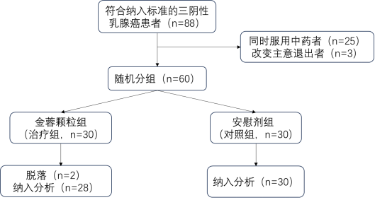

消癖颗粒改善三阴性乳腺癌巩固期患者生存质量的探索性研究
摘要
目的：
评价消癖颗粒改善三阴性乳腺癌(Triple Negative Breast Cancer，TNBC)巩固期患者生存质量疗效及安全性。
方法：
本研究采用探索性随机对照的研究方法，选取自2019年1月到2020年6月期间，广东省中医院乳腺科门诊收治的三阴性乳腺癌患者共60例，完整完成试验患者58例。治疗组30例服用消癖颗粒，对照组30例服用安慰剂。疗程为3月。随访方式基于门诊复诊及通讯联系。观察治疗前后患者生存质量、焦虑、抑郁、睡眠的变化情况及CXCL-1血清浓度的变化情况。生存质量指标采用FACT-B中文版调查表，由5个测量维度构成：生理状况、社会／家庭状况、情感状况、功能状况和附加关注，总分越高，患者的生命质量越好。焦虑状态采用焦虑自评量表(SAS)，得分越高，焦虑症状越严重；抑郁状态采用抑郁自评量表(SDS)，得分越高，抑郁症状越严重；睡眠状态采用匹茨堡睡眠量表(PSQI)，得分越高，睡眠质量越差；CXCL-1血清浓度在治疗前后进行血清标本采集后送检。治疗前后进行三大常规、肝肾功能、心电图的检查。研究结果采用t检验、秩和检验，均在SPSS23.0软件进行统计学分析，得出结论。
结果：
(1)生存质量：治疗前后治疗组和对照组两组间FACT-B总分及5个子项目评分比较差异均无统计学意义( P >0．05)。治疗组治疗前后FACT-B总分、生理状况、附加关注三个方面比较差异均有统计学意义( P值分别为0．024、0．047、0．000)，FACT-B治疗前得分106.89±19.51分，治疗后114.00±20.61分；生理状况治疗前得分22.46±4.33分，治疗后得分24.11±3.70分；附加关注治疗前得分24.86±5.87分，治疗后28.25±5.29分。对照组治疗前后情感状况得分比较差异有统计学意义( P =0.043)，治疗前得分18.43±3.50分，治疗后19.50±2.85分。
(2)焦虑状态：治疗前后治疗组和对照组两组问比较、两组治疗前后同组间比较及两组治疗前后差值比较差异均无统计学意义( P >0.05)。
(3)抑郁状态：治疗前后治疗组和对照组两组间比较、对照组治疗前后同组间比较差异均无统计学意义( P >0.05)。治疗组治疗前后同组间比较、两组治疗前后差值比较差异均有统计学意义( P值分别0.026、0.043)，治疗组治疗前得分50.14±10.50分，治疗后得分43.25±13.29分。治疗组治疗前后差值为6.89+15.50分，对照组治疗前后差值为-0.574±8.76分。
(4)睡眠状态：治疗前后治疗组和对照组两组问PSQI总分及各子项目评分比较、对照组治疗前后比较、两组治疗前后差值比较差异均无统计学意义( P >0.05)。治疗组治疗前后在PSQI总分、睡眠障碍、日间功能三方面比较差异均有统计学意义(P值分别为0.020、0.013、0.000)，PSQI治疗前得分9.43±4.32分，治疗后得分7.71±3.90分；睡眠障碍治疗前得分1.50±0.58分，治疗后得分1.18±0.55分；日间功能治疗前得分1.54±1.04分，治疗后得分1.18±0.90分。
(5)微观指标：治疗前后治疗组和对照组两组问CXCL-1血清浓度比较、对照组治疗前后同组间比较、两组治疗前后差值比较差异均无统计学意义( P >0．05)。治疗组治疗前后CXCL-I血清浓度比较差异有统计学意义( P =0．004)，治疗前血清浓度为67.00±27.32，治疗后血清浓度为55.73±19.69。
结论：
消癖颗粒在一定程度上可改善TNBC巩固期患者的生存质量及抑郁、失眠状态，且能降低血清中CXCL-1浓度，服用安全，说明消癖颗粒在TNBC巩固期的治疗中有一定的临床意义。
关键词： 消癖颗粒；三阴性乳腺癌；生存质量；CXCL-1
引言
乳腺癌作为女性人群中发病率及死亡率最高的癌种，越来越受到社会关注。尽管随着现代医学的进步，乳腺癌的综合治疗手段越来越完善，死亡率也较前下降，但总体发病率仍处于稳步上升趋势[1]。三阴性乳腺癌是指雌激素受体(Estrogen Receptor，ER)、孕激素受体(Progesterone Receptor，PR)以及人表皮生长因子受体2(Human Epidermal Growth FactorReceptor2，HER-2)均为阴性的一类乳腺癌，约占到全部乳腺癌的15％-20％，相较其他类型乳腺癌，TNBC发病较早，且侵袭性强、进展快、预后差，50％可发生淋巴结转移，也易发生局部复发和远处转移[2]。由于缺乏针对性治疗靶点，完成手术及化疗和／或放疗后无标准治疗方案。因此，巩固期的TNBC一直是现代医学治疗的难点和重点，该期的生存状况成为患者及医生关注的重点问题之一。乳腺癌作为一种全身性疾病，在新的医疗背景下，己经由单一的生物医学模式转变为生物、心理、社会医学模式，学者们逐渐重视社会心理因素的发生、发展、治疗和康复在肿瘤中的作用[3]。因此，肿瘤的治疗也从追求癌肿缩小与消失转移到了重视患者的生存质量，并提出了生存受益+生存质量=肿瘤治疗总获益率的概念[4]。人们普遍认为，对癌症及其治疗的全面评估应该包括生存质量[5]。生存质量是一个综合生理、心理和社会因素的评价指标，目前已广泛用于肿瘤疾病的治疗评价。
中医药学的特色和优势是整体观和辨证体系，是具有独特理论的系统医学，更加关注患者的主观感受和生存质量。将生存质量评价应用于中医药领域的临床疗效评价研究，有利于全面评估并选择更佳的治疗方案，规范中医药疗效评价体系，促进中医现代化[6]。几千年来，祖国医学在防治乳腺疾病方面积累了重要的实践经验，取得了独特的疗效。TNBC巩固期患者大多气血失和，脏腑失调，阴阳失衡，针对现代医学的难点，该时期恰是中医介入的时机。本研究立足于中医基础理论，采用乳腺病名老中医林毅教授经验方消癖颗粒，以期通过临床症状观察和理化客观指标评价中医药在改善TNBC巩固期患者生存质量的安全性和有效性，为中医治疗乳腺癌的疗效提供初步依据。
第一章 文献研究
第一节 三阴性乳腺癌医学研究概况
一、流行病学
2020年全球最新癌症负担数据显示，全球乳腺癌新发病例达226万例，己取代肺癌成为全球发病第一大癌。据美国癌症协会统计，每年约有26万名女性被诊断患有乳腺癌，其中15％～20％患有三阴性乳腺癌[7]。相关研究显示：三阴性乳腺癌更多见于年轻女性，40岁以下女性患三阴性乳腺癌的风险是50岁以上女性的2倍[8]。尤其是中青年女性乳腺癌患者增长迅速，成为年轻女性中死亡率增长最快的癌症之一。
二、TNBC临床特点
TNBC多发于初潮年龄较小、绝经前、母乳喂养时间较短、体重指数和腰臀比例大的女性[9]。具有发病早、侵袭性强、进展快、预后差等特点，50％可发生淋巴结转移，局部复发多见，远处转移具有器官特异性，首选转移部位有肺、肝和中枢神经系统[2]。TNBC复发高峰期多在首次治疗后3年内，但后期复发率(即确诊5年后的复发率)要比激素受体阳性乳腺癌减少50％，死亡主要发生在5年内[10]。研究发现TNBC患者的死亡率约为ER阳性乳腺癌患者的两倍[11]。同时，Hietz发现与其他乳腺肿瘤亚型相比，TNBC患者发生脑转移的风险更高(10.58％ VS 2.5％)，诊断为脑转移后的中位生存期更短(4个月 VS 8个月)[8]。
三、三阴性乳腺癌巩固期的中医治疗
三阴性乳腺癌缺乏内分泌及靶向治疗靶点，因此，中医药治疗成为三阴性乳腺癌巩固期患者的治疗选择之一。中医药在癌症治疗中的应用已有数百年的历史。历代中医文献对治法、遣方及用药注意等方面均有记载，窦汉卿用蠲毒流气饮加味(《疮疡经验全书·卷一》)，陈自明用益气养营汤(《景岳全书·卷六十四》)、加味逍遥散(《外科正宗·卷之二·上部疽毒门》)、加味归脾汤等(《医学心悟·卷三》)，陈实功用清肝解郁汤等(《外科正宗·卷之三·乳痈论第二十六》，张介宾用连翘金贝煎治热毒有余之“阳分痈毒”(《景岳全书·卷之三十九人集·妇人规(下)·乳病类·乳痈乳岩·六五》)，王洪绪创犀黄丸(《外科证治全生集·卷四》)，清代赵濂用化岩汤治男女乳岩(《医门补要》)，叶桂用益气养荣汤(《本草经解》)。治疗原则概括起来有清肝解郁、培补气血、化痰散结、补益肝肾、清热解毒等。此外，较多医家也提出不能过用攻伐，以防正气进一步损伤。明代薛己《校注妇人良方·卷二十四疮疡门·乳痈乳岩方论第十四》云：“乳岩……若用行气破血之剂，则速其亡。”张璐《张氏医通·卷十一·妇人门下》指出：‘‘若误用攻伐，危殆迫矣。”明代孙一奎《赤水玄珠》曰：“或饮食少思，时作呕吐，宜补胃气。或饮食难化，泄泻腹痛，宜补脾气……或劳碌肿痛，宜补气血。怒气肿痛，宜养肝血。甚不可用克伐之剂，复伤脾胃也。”至今仍对乳岩的诊疗实践起着重要的指导意义。
现代中医学认为癌症是由内源性物理条件和外源性致病因素共同作用引起的，而不和谐的身心状态也可导致癌症的发生发展。癌症是一种全身性疾病，基于此，现代中医更加注重人体内在防御的整体增强和癌症治疗中机体稳态的恢复。毛静瑜 meta 分析显示：中医药联合放化疗的复发转移率低于单纯放化疗，而单用中医药治疗者，其复发转移率明显低于未采用任何治疗者[12]。黄芊等探讨阳和汤对化疗患者生活质量的改善程度，发现治疗组的 KPS 评分及临床症状均显著优于常规化疗组[13]。李朵璐等认为 TNBC 的分子分型中，免疫调节型患者在各类型患者中具有相对好的预后，可能与其体内癌细胞的免疫应答基因被激活有关[14]。中医在调节机体整体免疫方面具有不可替代的优势。田华琴教授提出了“三阴性乳腺癌全程管理”学说，总结出初期(术后放化疗+中医药辅助)—临床观察期(定期复查+中医药维持治疗)—复发转移期(姑息放化疗+中医药强化治疗)”的治疗模式，强调了中医在治疗全程的重要辅助作用[15]。无独有偶，刘胜教授也认为 TNBC 患者的治疗应中西医结合综合治疗，并应全程管理，中药治疗的应用不仅仅在西医综合治疗后，而应该与西医治疗手段同步进行[16]。相关研究还发现中药及提取物对 MDA—MB．231 等三阴株有不亚于化疗药物的抑制作用[17]。总之，中医药在三阴性乳腺癌综合治疗中的优势突出，但应注意中药的运用应根据患者不同的治疗时期有所侧重，进一步明确中药治疗介入的最佳时机。
第二节 乳腺癌对生存质量的影响
乳腺癌是女性常见的恶性肿瘤，随着诊疗技术的提高，乳腺癌患者生存率明显提高，更多的乳腺癌患者进入到慢病期，乳腺癌的伴随疾病或症状逐渐被重视[18-19]。精神心理问题、睡眠和认知功能障碍是常见的乳腺癌伴随疾病。研究显示：31.8％癌症患者伴有精神障碍，而乳腺癌患者出现精神心理问题的比例高达42％，其中以抑郁与焦虑最常见[20-21]。现代医学己由单一的生物医学模式转变为生物-心理-社会医学模式，学者们开始重视社会心理因素在恶性肿瘤的发生、发展、治疗和康复中的作用。因此，肿瘤的治疗也从单纯追求癌肿缩小与消失转移到了要同时高度重视患者的生存质量，并提出了生存受益+生存质量=肿瘤治疗总获益率的理念。人们普遍认为，对癌症及其治疗的全面评估应该包括生存质量。
一、生存质量
生存质量(Quality of Life，QOL)又称生命质量、生活质量，在恶性肿瘤这一范围内将其定义为综合评价恶性肿瘤患者生活中心理、经济、社会、身体功能及情绪等多方面因素质量的一个健康概念[22]。大约四分之一的乳腺癌患者具有与癌症相关的疲劳，4％和11％至16％有抑郁症和焦虑症，所有这些都可能影响生存质量[23]。Susan的问卷调查结果显示，诊断前及治疗后从事高水平体力运动的乳腺癌患者有着更少的疲劳和抑郁症状及更好的生存质量[24]。中医药疗法使众多肿瘤患者获得了更好的生存质量，但中医药治疗也存在根除癌灶及杀灭癌细胞困难、疗效重复性差等不足。若以 WHO 的实体瘤疗效评价标准来评价，只能是稳定，甚至是无效。 FACT-B 量表经万崇华等结合我国实际检测后，更加有切合性、可能性、准确性，成为评估乳腺癌患者生存质量不可或缺的工具，可为临床医师选择更适合患者病情的治疗方案提供依据。
二、情绪障碍
研究发现，乳腺癌患者遭受与癌症相关的心理、身体压力及治疗相关的副作用，如手术创伤、疤痕、乳房切除术和淋巴水肿等[25]。将近一半的患者在确诊后一年会经历严重的心理困扰，其中抑郁和焦虑的发生率大约是普通女性人口的两倍[26]，其抑郁症状会导致身体状况恶化和死亡率增加[27]。Avis的研究发现五分之一的女性在确诊后抑郁症状持续至少两年[28]。报告抗焦虑药的两项研究显示，与未患癌症的女性相比，情绪抑郁状态使乳腺癌幸存者的死亡率分别增加了8％和47％[29]。而相关研究指出：临床诊断抑郁症的独立预测因素包括年龄较小、诊断时有共病和不太有利的肿瘤特征、独居和受教育水平较低等[30、3l]。TNBC 具有发病年龄更轻、分子分型更差、预后不佳的特点，患者更易产生情绪障碍。
三、睡眠障碍
与患其他类型癌症及未患癌症的人群相比，患有乳腺癌的女性睡眠障碍发生率较高[32]，完成化疗的乳腺癌患者可表现出更少的睡眠深度，更差的睡眠效果[33]。一项对摩洛哥乳腺癌患者的调查显示，69.3％的参与者有明显的睡眠障碍，87％的人出现焦虑抑郁综合征[34]。
乳腺癌作为世界上最常见的公共卫生问题之一，已成为女性癌症死亡的主要原因。德国流行病学研究显示：32％的癌症患者，特别是42％的乳腺癌患者，患有高度的精神障碍和情绪困扰[35]。抑郁症是癌症患者常见的共病，他们表现出生存质量差、功能障碍更多、自杀意念水平更高以及显著的死亡率[36]。患有乳腺癌的妇女也表现出焦虑，包括创伤后应激综合征和广泛性焦虑症，并在治疗过程中持续存在[37]。焦虑、抑郁、失眠三位一体形成了一种恶性循环，不良的情绪促进失眠的发生，而睡眠不佳又会加重情绪障碍，并进一步影响患者的生存质量及治疗的依从性，最终可能影响到患者远期生存。
四、免疫受损
巨噬细胞是包括乳腺癌在内的多种恶性肿瘤中与宿主免疫系统相关的最丰富的基质细胞，其中M2型巨噬细胞在人类癌症中占主导地位，肿瘤相关巨噬细胞(TAMs)浸润可以产生一种支持癌症发生的炎症状态，并分泌多种细胞因子来促进肿瘤血管生成和侵袭，促进乳腺癌生长和转移。免疫屏障的破坏使乳腺癌患者复发转移的风险升高，并由此带来躯体症状的诸多不适及不良的情绪状态。但肿瘤干细胞(CSCs)可以通过招募和与广泛的免疫细胞相互作用来逃避免疫破坏并促进免疫抑制肿瘤微环境的建立[38]。王志宇等通过网络药理学探索纯中药复方制剂消癖颗粒对乳腺癌的预防作用及可能的抗转移分子机制，发现消癖颗粒组的肿瘤体积和数量与对照组相比是明显抑制，可能通过抑制 CSCs 转移抑制乳腺癌肺转移。体外试验证实消癖颗粒的抑癌作用可能与肿瘤微环境有关。基于此，其进一步推测了消癖颗粒的主要作用靶点，发现共有4种细胞因子(G-CSF、CCL2、CXCL-2、CXCL-1)与消癖颗粒治疗有相似的变化，消癖颗粒治疗后 4 种细胞因子均下调，其中以CXCL-1降低最明显。CXCL-1可消除消癖颗粒抑制转移的能力，表明 CXCL-l 是抑制消癖颗粒抗癌活性的关键中介[39]。王胜奇等同样发现消癖颗粒可以抑制 M2 表型极化以及 CXCLl 的表达和分泌，最终导致消癖颗粒对乳腺 CSCs 自我更新的抑制作用[40]。
CXCL-1是CXC驱化家族中的一员，主要作用是诱导不同免疫细胞的定向运动，并参与激活。其主要作用在两个方面：(1)保持稳态／平衡：指导淋巴细胞生理性迁移和定位；(2)炎性驱化：在病原因子作用下，由感染部位的固有细胞或渗出细胞分泌，以募集单核、中性、淋巴细胞至感染部位发挥作用。因此其广泛应用于病毒感染(AIDS)、肿瘤、移植以及自身免疫性疾病等多个领域。目前全球范围内针对CXCL-1也开展多项研究，根据 Clinical Trail 登记，Sidney Kimmel 综合癌症中心认为CXCL-1在黑色素瘤向侵袭性疾病的进展中起重要作用，致力于探讨血清CXCL-1水平与黑色素瘤的相关性。美国一项为期3年的研究评估在CXCL-1和danirixin (抑制中性粒细胞活化所需浓度)升高的情况下，受呼吸道合胞病毒(RSV)感染的2岁以下儿童和健康成人的中性粒细胞活化情况的差异，以确定受RSV感染的儿童和成人中性粒细胞是否同样被CXCLl激活而被danirixin抑制。但目前直接针对CXCL-1这个指标进行乳腺癌相关研究试验仍较少。
第三节 改善生存质量的疗法
一、现代医学疗法
随着现代医学的不断进步及乳腺癌发病年龄的年轻化，乳腺癌患者生存期延长。近年来中国乳腺癌新增病例年均增长己达3％～5％，高于全世界年平均增长水平，其五年生存率约增长到89％，使得乳腺癌患者成为数量最多的癌症幸存者，其生存质量日益受到学者及患者的重视，心理研究的热点多聚焦于乳腺癌术后生存期的负性心理反应及生存质量等方面[41]。生存质量是一个综合评价指标，其临床表现不仅体现在躯体症状(疲倦乏力、气短等)，也体现在情绪、睡眠障碍方面。现代医学对其干预主要包括物理疗法及护理关注。认知行为压力管理可以引导乳腺癌患者的积极心理，提高益处发现水平，缓解负性情绪，改善其生存质量。周彩虹等评价认知行为压力管理乳腺癌患者的影响，发现其在干预前后生活质量总分、功能状况及社会家庭领域的维度得分干预主效应差异有统计学意义( P <0.05)[42]。赵昊昊采用循经冥想观察对乳腺癌患者生存质量的改善情况，训练可以总体上提升患者的生存质量，但是在评价生存质量的具体因子上未能全面有效的干预[43]。祁兢晶等对乳腺癌化疗患者进行药学干预，8周化疗后干预组的FACT-B总分明显高于对照组( P <0.05)，有效缓解了乳腺癌患者焦虑、抑郁情绪，提高了生存质量，减轻和缓解恶心、呕吐的发生[44]。晏琛等在常规护理的基础上，对乳腺癌化疗患者实施综合护理干预，包括心理护理、次磺酰胺类促进剂预防静脉炎、预防化疗副作用、饮食护理、运动指导等，经治疗后，干预组患者的SAS、SDS、生命质量测定量表(QLQ-C30)及各维度评分均高于护理前及对照组( P <0.01)，改善了患者的情绪状态和生命质量[45]。马道云运用穴位神经刺激仪改善围绝经期综合征患者的性激素水平，提高患者的生命质量[46]。
二、中医药疗法
中医药疗法辨证与辨病相结合，扶正祛邪，顾护正气，攻补兼施，在减少现代医学不同治疗阶段不同治疗方法导致的并发症、减毒增效、减少复发转移、逆转耐药等方面发挥了重要作用，使众多肿瘤患者获得了较好的生存质量。司徒红林等探讨中药癌复康对乳腺癌术后化疗患者生存质量的影响。结果显示，治疗组生存质量总分及生理分、认知分、情感分、社会机能分等上升的幅度均大于对照组( P <0.01)，治疗组各症状改善的程度也均较对照组高( P <0.01)，提示癌复康能改善乳腺癌术后化疗患者症状，提高患者的生存质量[47]。胡辉等运用补中益气汤联合护理干预对乳腺癌术后癌因性疲乏患者进行干预，结果显示：观察组生活质量综合评定问卷(GQOLI-74)在干预后的数值比干预前要高，且高于对照组( P <0.05)，表明补中益气汤联合护理干预能有效改善癌因性疲乏症状，提高患者生存质量[48]。三阴性乳腺癌患者完成手术及化疗和／或放疗后，现代医学已无标准的治疗方案。而这一时期正是中医治疗的切入点，中医对于乳腺癌的治疗重点在于整体调治，增强机体自身免疫，重塑肿瘤免疫微环境，而不是直接杀死癌细胞[49]。生存质量可以全面评估患者心理、生理、社会功能，反映机体免疫功能，评估中医药治疗疗效。
第四节 消癖颗粒的相关研究
消癖颗粒是中医乳腺病名家林毅教授在原消癖口服液系列制剂基础上组方优化而成。由郁金、莪术、仙灵脾、肉苁蓉、制首乌、女贞子、丹参等10味中药组成，具有疏肝活血、补肾助阳、调摄冲任之功效，对于痰瘀互结、冲任失调型乳腺增生病具有良好的疗效。
一、消癖口服液在乳腺增生病的研究
对于乳腺良性病变一般认为内分泌的紊乱主要是由于孕激素(P)和雌激素(E)分泌的比例失去平衡，P／E2的比率失调引起。司徒红林等观察消癖口服液对乳腺良性病变不典型增生的疗效及对该类患者激素水平的影响，结果显示：其对乳腺良性病变不典型增生的近期疗效等同于三苯氧胺，而优于乳癖消并且无毒副反应，临床应用安全可靠[50]。并且还可调整乳腺良性病变不典型增生紊乱的激素水平，降低E2水平，其疗效优于乳癖消，而与三苯氧胺等效。对偏高的PRL也有一定的作用[51]。关若丹等使用消癖颗粒观察对大鼠乳腺癌前病变组织MVD(微血管密度)及VEGF(血管内皮生长因子)表达的影响，结果显示：消癖系列口服液能显著抑制大鼠乳腺癌前病变组织的MVD(微血管密度)，并且疗效与他莫昔芬比较无统计学意义。说明抑制血管生成是消癖系列口服液阻断或逆转大鼠乳腺癌前病变发展的可能机制[52]。
二、消癖颗粒在癌前病变中的运用
为便于患者长期服用及临床推广，林毅教授在原消癖口服液系列制剂基础上组方优化而成“消癖颗粒”。在前瞻性多中心随机双盲对照临床试验中，消癖颗粒对乳腺增生病的整体治疗作用明显优于对照组，已于2018年获批上市(批准文号：国药准字Z20180002)。该药除了保持原系列口服液“经前疏肝，经后补肾”的“周期疗法”的优点外，还具有有效率高、疗效稳定、临床可操作性、可重复性强等特点。对乳房肿痛和肿块以及伴随的胸闷胁胀、善郁易怒、失眠多梦、神疲乏力、腰膝痠软等症状安全有效，疗效显著，可有效改善生活质量。与现代医学“正常上皮→增生→非典型增生→原位癌→浸润癌”的多阶段发展模式相对应，基于中医“治未病”思想，林毅提出乳腺增生病→乳腺癌“病机发展轴”，认为病机发展以“气滞→痰凝→血瘀→痰凝互结，冲任失调”为规律演变及转化。该理论为中医药干预具有乳腺癌高风险因素的乳腺增生尤其是不典型增生、防治乳腺癌提供了理论支持。乳腺囊性增生病的恶变率约为1％-5％，其中非典型导管增生与导管内乳头状瘤病被认为是乳腺癌癌前病变。陈前军等对乳腺癌癌前病变的SD大鼠进行研究发现：消癖颗粒对大鼠乳腺癌变有一定的预防作用。其作用机制可能与EGFR-STAT3通路中相关蛋白表达无关，是否与调控该通路的其它相关因子有关需进一步研究[53]。多中心III期临床试验研究结果显示：消癖颗粒对乳腺增生病的治疗作用整体明显优于对照组(乳核散结片)，在治疗乳房疼痛、触痛、乳腺质地、中医症候疗效等方面，消癖颗粒优势明显，具有良好的临床疗效和安全性。
三、消癖颗粒在乳腺癌领域的探索
基于近20年的消癖颗粒药物研发基础以及“治未病”思想拓展其应用，科研团队进一步应用网络药理学、生物信息学、转基因乳腺癌自发动物模型等多种现代研究工具，发现“消癖颗粒”可显著抑制乳腺癌肺转移。研究显示该复方中806个基因靶点有81个与乳腺癌发生发展密切相关；基因富集及细胞因子芯片分析发现微环境中肿瘤巨噬细胞分泌的CXCLl趋化因子是消癖颗粒的主要靶点网络药理学研究结果显示：消癖颗粒延迟了乳腺癌的发展并有效地抑制了肺转移，同时延长了生存期，并证实了消癖颗粒应用的安全性[54]。该系列研究一定程度上为中医药调整机体微环境预防性治疗乳腺癌提供了新的思路，从多层次、多途径、多靶点验证了中医药调整免疫微环境防治肿瘤的学术理论。韦任雄等观察消癖颗粒单药及联合他莫昔芬对乳腺癌细胞增殖、迁移、克隆、凋亡及细胞内DNA损伤程度的影响，选取ER+、PR+的人乳腺癌细胞MCF-7和T47D细胞试验，结果显示，与消癖颗粒、他莫昔芬单药比较，联合用药显著抑制乳腺癌细胞MCF-7及T47D球囊形成、克隆及迁移能力( P <0．05)，消癖颗粒可以抑制ER+、PR+乳腺癌细胞MCF-7及T47D增殖，且抑制作用随浓度的增高而增强，具有剂量依赖性。并且能促进细胞内8-OHdG生成增多( P <0.05)，导致细胞内DNA氧化损伤，最后诱导细胞凋亡[55]。
TNBC患者系统治疗后大多表现气血失和、脏腑失调、阴阳失衡，本研究立足于中医基础理论及前期研究结果基础，进行消癖颗粒改善TNBC巩固期患者生存质量的临床研究具有重要的现实意义。探索消癖颗粒在TNBC巩固期患者生存质量、睡眠、情绪等方面的作用，评估消癖颗粒能否通过影响肿瘤巨噬细胞(TAMs)分泌CXCL-l从而提高患者免疫的功效，为拓展消癖颗粒的临床适应症提供初步的依据。
第五节 问题与展望
TNBC是一种治疗棘手的乳腺癌类型，尽管现代医学不断完善，精准医学越来越发达，由于缺乏治疗的靶点，完成首期治疗的TNBC患者的后续治疗仍然是现代医学的难点问题。其次，己完成手术及放化疗的患者不但承受着手术及放化疗带来的副作用，还承担着巨大的心理压力，生存质量较差。
中医治疗乳腺癌主要通过改善肿瘤免疫微环境，提高患者自身免疫力以对抗肿瘤。因此，巩固期是中医介入的较好时机。不仅可以缓解患者术后及放化疗后副作用，还可以增强患者免疫力，抑制癌症的复发转移，提高生存质量，延长生存期。但以WHO实体瘤评价标准评估中医药在乳腺癌治疗中的疗效，只能是稳定，甚至是无效。如何客观、准确地评价乳腺癌中医药治疗效果是当前一个必须面对的课题。目前，生存质量概念正被广泛引入到癌症的效果评价等方面，肿瘤的发生发展及其相关的治疗对患者生理心理及社会功能的影响日益受到重视，疗效评价更加关注自然属性与社会属性，研究的目标也由仅仅追求局部缓解率转移到应采用何种措施使患者获得最大益处上来。生存质量的实质内容与中医学的辨证论治和整体观念有极大的相似性。深入的探讨中医学治疗特点与生存质量之间的关系，对于客观、全面地认识中医药的治疗价值，对提高中医药学在恶性肿瘤综合治疗中的地位尤其是针对现代医学治疗的难点与盲区，进而完善目前的肿瘤疗效评定标准具有重要意义。
第二章 临床研究
第一节 临床研究方案
一、总体设计
本研究为探索性研究，采用前瞻性、随机对照方法。
二、研究资料
(一)研究对象
1．病例来源
2019年1月至2020年6月于广东省中医院乳腺科门诊就诊的三阴性乳腺癌术后患者，并且已完成化疗／放疗者。
2．病例选择标准
(1)诊断标准
病理诊断：乳腺癌
免疫组化：ER(-)、PR(-)、HER2(-)
备注：诊断标准参考《美国临床肿瘤学会和美国病理学家学会乳腺癌雌激素／孕激素受体免疫组化检测指南》、2019年中国《乳腺癌HER2检测指南》
(2)纳入标准
①女性，年龄18-70岁；
②上述三阴性乳腺癌的诊断标准；
③完成系统治疗，即完成手术、放疗和／或化疗，进入随访期至少21天者；
④全身复查未见复发转移征象者；
⑤KPS评分≥60分；
⑥患者知情同意，并签署知情同意书。
(3)排除标准
①入组前被确诊为子宫内膜癌或卵巢癌家族史者；
②妊娠期、哺乳期妇女，有妊娠计划者；
③有严重的原发性心、肝、肾、肺、血液或影响其生存的严重疾病者；
④精神和行为障碍不能充分知情者；
⑤怀疑或确有酒精、药物滥用史、不能配合治疗者；
⑥存在认知障碍或文化水平低不能理解及正确填写各种量表者；
⑦对本药物及对照药物无法吞咽、慢性腹泻和肠梗阻，存在影响药物服用吸收的多种因素的患者；
⑧进入其他试验者；
(4)剔除标准
已经入组病例但出现以下情况之一者，应予剔除：
①同时服用其他有治疗作用的疏肝补肾、活血化瘀、散结止痛等类似功效的中药、植物制剂的(包括中药饮片及中成药)患者；
②对观察药物及对照药物过敏者；
③由于采用某种禁用的疗法，以至于无法评估疗效者；
④因其他不可抗拒的非治疗因素而终止治疗者；
(5)退出(脱落)标准：
因以下原因未完成临床方案的入组病例应视为脱落：
①病人自行退出或发生意外情况不能坚持治疗者；
②失访。
(二)治疗药物
消癖颗粒：由广州奇绩医药科技有限公司提供，产品规格：8.5g／袋，颗粒剂；批号：180101。
消癖颗粒模拟安慰剂：由广州奇绩医药科技有限公司提供，产品规格：8.5g／袋，颗粒剂；批号：171201。
三、研究方法
(一)样本含量的估算
本研究是一项探索性研究，为广东省科技厅课题《消癖颗粒预防乳腺癌复发转移的随机对照临床试验及消癖颗粒通过CXCL-l细胞因子预防乳腺癌复发转移的分子机制研究》子课题，该试验是一项临床预试验，共分为2组，定量估计每组20-30例，按15％的脱落率估计，两组共需观察60-70例。
(二)分组及治疗
1．随机分组方法
本试验主要由奇绩公司质控人员对符合纳入标准的患者进行随机分组。
(1)采用中央随机分配系统，一级揭盲可得出各病例号所对应的组别(A、B两组)名单，二级揭盲可得出两组所对应的处理(试验组和对照组)名单(见附录1)。
(2)一级揭盲后A组31人、B组29人。为使两组人数达到1：1的要求，需要从A组随机抽取1人到B组。具体方法(余数法)为：继续取1个随机数字，57除以A组的人数。57÷31=l……26
(3)按A组出现的顺序，找到第26个人，标记A1，调整到B组，这样试验人数A组：B组=l：1。
2．试验分组
分为两组，即对照组(30人，模拟安慰剂组)和治疗组(30人，消癖颗粒组)。
3．治疗方法
治疗组：服用消癖颗粒，每次8．5g，tid，饭后温水冲服。
对照组：服用消癖颗粒模拟安慰剂，每次8．5g，tid，饭后温水冲服。
月经期不需服用药物。首次服药可以在月经周期的任何时期。
疗程：3个月。
受试者首次服药日起给药周期即确定，如出现药物漏服或因不良事件等原因暂停给药，需详细记录未服药物原本应服用的时问以及未服原因，并在之后继续按照方案服药，不进行补服或周期调整。
(三)观察终点
按期完成3个月口服药物治疗，并完成疗效评估。
(四)疗效指标
1．主要观察指标：生存质量
《乳腺癌患者生命质量测定量表FACT-B中文版(V4．0)》(见附录4)由一个测量癌症病人生命质量共性部分的一般量表(共性模块)FACT-G和乳腺癌相关的特异量表构成的量表群，内包含5个子量表，包括生理状况(physical well-being)：7个条目；社会、家庭状况(social／family well-being)：7个条目；情感状况；(Emotional well—being)：6个条目；功能状况(Functional well．being)：7个条目；附加关注(Additional concelTiS)：9个条目。5个子量表共36个条目，满分144分，得分越高说明生存质量越好。
2．次要观察指标：情绪障碍、睡眠状态
(1)焦虑自评量表(SAS)(见附录5)
焦虑自评量表(SAS)含有20个反映焦虑主观感受的项目，每个项目按症状出现的频度分为四级评分，得分越高，焦虑程度越重。
(2)抑郁自评量表(SDS)(见附录6)
抑郁自评量表(SDS)含有20个反映抑郁主观感受的项目，每个项目按症状出现的频度分为四级评分，得分越高，抑郁程度越重。
(3)匹茨堡睡眠量表(PSQI)(见附录7)
匹茨堡睡眠质量指数(PSQI)用于评定被试者最近1个月的睡眠质量。总分范围为0～21分，得分越高，表示睡眠质量越差。
分别采用FACT-B中文版、SAS、SDS、PSQI量表，于服药前后进行测量，共进行2次。由患者自行完成表格填写。每次测量后进行各项目分数计算及记录。
(4)CXCL-1血清浓度
对符合纳入标准的TNBC巩固期患者在服药前后于广东省中医院门诊检验科分别进行CXCL-1血样本采集，共进行2次，由工作人员当日送检验室，经离心机离心后(3000r／min，共3min)，取悬浮红细胞上清液放入抗凝管，编码后放．800冰箱进行冷藏。采集完成后一并送广东省中医院乳腺科创新团队集中检验。
完成CXCL-1血样本采集后一并送创新团队，根据人CXCL-1的Elisa试剂盒操作步骤分别对试验前后血样本进行标本采集及试验操作，结束后进行试验组及对照组试验前后CXCL-1血清浓度记录。
(四)统计学分析
1． 数据管理及统计分析方法
采用SPSS 23.0对数据进行管理及统计分析。正态分布计量资料以均数±标准差(x̄±s)表示，组间比较采用t检验，非正态分布计量资料或方差不齐时采用非参数秩和检验(Mann-Whitney U)，组内治疗前后比较采用配对t检验(或配对符号秩和检验Wilcoxon)；计数资料均以率或构成比表示，组问比较采用行ꭓ2检验(或确切概率法)，等级资料采用秩和检验，以P <0.05为差异有统计学意义。
2．统计学分析内容
①治疗组与对照组基线情况比较：包括一般情况、临床病理特征等；
②治疗前后治疗组与对照组的疗效比较：FACT-B、SAS、SDS、PSQI、CXCL-1；
③治疗组、对照组治疗前后疗效比较：FACT-B、SAS、SDS、PSQI、CXCL-1；
④治疗前后治疗组与对照组安全性比较：三大常规、肝肾功能、心电图；
⑤治疗组、对照组治疗前后安全性比较：三大常规、肝肾功能、心电图。
第二节 研究结果
所选病例资料均来源于2019年1月至2020年1月在广东省中医院乳腺科门诊就诊的患者。将符合纳入标准的患者88例，排除同时服用中药治疗者25例，治疗前改变主意而退出者3例，余60例随机分为治疗组、对照组，每组各30例，治疗组脱落2例，实际观察病例58人。入选病例中均无不良事件发生。
一、一般资料分析
(一)年龄
治疗组患者最小年龄29岁，最大年龄69岁，平均年龄45.57±11.06岁，中位年龄44岁；对照组最小年龄32岁，最大年龄67岁，平均年龄48.60±9.62岁，中位年龄49岁；两组患者年龄比较差异无统计学意义(P>0．05)，见表l。
表1 两组患者年龄比较
分组 | n | x̄±s | t | P |
治疗组 | 30 | 45.57±11.06 | 1.134 | 0.262 |
对照组 | 30 | 48.60±9.62 |
注：两组间年龄的资料符合正态性，采用独立样本t检验，P >0.05，说明两组年龄无差异。
(二)婚育情况
两组患者婚姻状态、妊娠情况、流产情况、绝经情况，采用ꭓ2检验进行统计分析，结果显示两组比较差异均无统计学意义，具有可比性( P分别为0.237、1.000、0.196、0.438)，见表2。
表2 两组患者婚育情况比较
治疗组(n=30) | 对照组(n=30) | ꭓ2 | P | |
婚姻状况(%) | 0.237* | |||
未婚 | 3(10.00) | 0(0.00) | ||
已婚 | 27(90.00) | 29(96.67) | ||
离婚 | 0(0.00) | 1(3.33) | ||
妊娠情况(%) | 1.000* | |||
有 | 27(90.00) | 28 | ||
无 | 3(10.00) | 2 | ||
流产情况(%) | 1.669 | 0.196 | ||
有 | 13(43.33) | 18 | ||
无 | 17(56.67) | 12 | ||
绝经情况(%) | 0.601 | 0.438 | ||
有 | 14(46.67) | 17 | ||
无 | 16(53.33) | 13 |
注：*采用Fisher确切概率法
(三)临床病理特征及治疗方案
采用ꭓ2检验对两组患者临床病理特征，包括病理类型、组织学分级、肿瘤大小、淋巴结情况、临床分期、Ki-67、放化疗治疗进行统计分析，结果显示两组比较差异均无统计学意义，具有可比性( P分别为0.519、0.793、0.105、0.519、0.731、1.000、0.621、0.323)，见表3。
表3 两组患者临床病理特征及治疗方案比较
治疗组(n=30) | 对照组(n=30) | ꭓ2 | P | |
病理类型(％) | ||||
浸润性导管癌 | 25(83.33) | 23(76.67) | 0.417 | 0.519 |
其他类型癌 | 5(16.67) | 7(23.33) | ||
组织学分级(％) | ||||
l-2级 | 13(43.33) | 12(40.00) | 0.069 | 0.793 |
3级 | 17(56.67) | 18(60.00) | ||
肿瘤大小(％) | ||||
T1 | 13(43.33) | 16(53.33) | ||
T2 | 15(50.00) | 11(36.67) | 0.105* | |
T3 | 0(0.00) | 3(10.00) | ||
Tx | 2(6.67) | 0(0.00) | ||
淋巴结情况(％) | ||||
有转移 | 5(16.67) | 7(23.33) | 0.417 | 0.519 |
无转移 | 25(83.33) | 23(76.67) | ||
临床分期(％) | ||||
Ⅰ | 10(33.33) | 13(43.33) | 0.731* | |
Ⅱ | 18(60.00) | 14(46.67) | ||
Ⅲ | 2(6.67) | 3(10.00) | ||
Ki-67(％) | ||||
≤14％ | l(3.33) | 2(6.67) | 1.000* | |
＞14％ | 29(96.67) | 28(93.33) | ||
化疗方案(％) | ||||
E/AC-T | 16(53.33) | 18(60.00) | ||
其他方案 | 6(20.00) | 5(16.67) | 0.323* | |
未知 | 8(26.64) | 7(23.33) | ||
放疗(％) | ||||
是 | 16(53.33) | 17(56.67) | 0.621* | |
否 | 2(6.67) | 3(10.00) | ||
未知 | 12(40.00) | 10(33.33) |
注：*采用Fisher确切概率法
二、治疗前后两组量表评分比较
(一)治疗前两组量表评分比较
1．治疗前两组FACT-B评分比较
对两组治疗前FACT-B总分及5个子项目进行统计学检验，结果显示：治疗组与对照组的FACT-B总评分及各子项目评分比较差异均无统计学意义( P 分别为0.706、0.262、0.357、0.547、0.976、0.087)，具有可比性，见表4。
表4 治疗前两组FACT-B总分及子项目评分比较
治疗组 | 对照组 | |||||||
n | x̄±s | M(P25,P75) | n | x̄±s | M(P25,P75) | z | P | |
FACT-B | 30 | 108.70±19.77 | 108.00 (93.25,129.25) | 30 | 110.50±18.15 | 115.50 (99.75,124.00) | -0.377 | 0.706 |
生理状况 | 30 | 23.00 (19.00,26.00) | 30 | 25.00 (20.50,26.50) | -1.121 | 0.262 | ||
社会/家庭状况 | 30 | 22.50 (20.00,26.00) | 30 | 21.00 (17.75,26.00) | -0.921 | 0.357 | ||
情感状况 | 30 | 19.50 (15.75,22.00) | 30 | 18.50 (16.75,21.00) | -0.602 | 0.547 | ||
功能状况 | 30 | 20.00 (15.75,26.00) | 30 | 20.50 (16.75,25.25) | -0.030 | 0.976 | ||
附加关注 | 30 | 25.50 (22.00,30.00) | 30 | 29.00 (24.75,30.50) | -1.714 | 0.976 | ||
注：FACT-B总分符合正态分布(对照组P=0.104，治疗组P=0.094)，但存在异常值；其余子项目均不符合正态分布，故全采用秩和检验。
2．治疗前两组SAS、SDS评分比较
对两组治疗前焦虑自评量表(SAS)、抑郁自评量表(SDS)进行统计学检验，结果显示：治疗组与对照组的SAS、SDS量表总评分比较差异无统计学意义(P分别为0.594、0.741)，具有可比性。见表5。
表5 治疗前两组间SAS、SDS评分比较
治疗组 | 对照组 | |||||||
n | x̄±s | M(P25,P75) | n | x̄±s | M(P25,P75) | t/z | P | |
SAS | 30 | 43.83±8.62 | 45.5 (38.25,49.00) | 30 | 43.57±6.65 | 43.00 (39.00,48.00) | -0.533 | 0.594 |
SDS | 30 | 49.53±10.40 | 30 | 48.67±9.80 | -0.332 | 0.741 | ||
注：SAS治疗前两组间比较符合正态分布(治疗组P =0.366，对照组P =0.636)，治疗组第16位存在异常值，采用秩和检验；SDS治疗前两组间比较符合正态分布(治疗组P =0.515，对照组P =0.430)，采用独立样本 t 检验，F=0.101，P =0.752，方差齐性，t =-0.332。
3．治疗前两组PSQI评分比较
对两组治疗前匹茨堡睡眠量表(PSQI)总分及7个子项目，主要包括：睡眠质量、入睡时间、睡眠时间、睡眠效率、睡眠障碍、催眠药物应用、日间功能进行统计学检验。结果显示：治疗组与对照组的PSQI量表总评分及各子项目比较差异均无统计学意义( P分别为0.644、0.576、0.318、0.814、0.616、0.317、0.161、0.810)，具有可比性，见表6。
表6 治疗前两组间PSQI总分及子项目评分比较
治疗组 | 对照组 | |||||||
n | x̄±s | M(P25,P75) | n | x̄±s | M(P25,P75) | t/z | P | |
PSQI | 30 | 9.40±4.17 | 30 | 9.93±4.71 | 0.464 | 0.644 | ||
睡眠质量 | 30 | - | 1.50 (1.00,2.00) | 30 | - | 1.00 (1.00,2.00) | -0.559 | 0.576 |
入睡时间 | 30 | - | 2.00 (1.00,3.00) | 30 | - | 2.50 (1.00,3.00) | -1.000 | 0.576 |
睡眠时间 | 30 | - | 1.00 (0.75,2.00) | 30 | - | 1.00 (0.75,3.00) | -0.235 | 0.814 |
睡眠效率 | 30 | - | 1.00 (0.00,2.25) | 30 | - | 1.00 (0.00,3.00) | -0.501 | 0.616 |
睡眠障碍 | 30 | - | 1.00 (1.00,2.00) | 30 | - | 1.00 (1.00,2.00) | -1.000 | 0.317 |
催眠药物应用 | 30 | - | 0.00 (0.00,0.00) | 30 | - | 0.00 (0.00,0.00) | -1.402 | 0.161 |
日间功能 | 30 | - | 2.00 (1.00,2.00) | 30 | - | 2.00 (1.00,2.00) | -0.240 | 0.810 |
注：PSQI总分治疗前后比较符合正态分布(治疗组P =0.339，对照组P =0.089)，不存在异常值，选用两独立样本t检验，F=0.365，P=0.548，方差齐性，t=0.464。其余子项目均不符合正态分布，故采用秩和检验。
(二)治疗后两组量表评分比较
1．治疗后两组FACT-B评分比较
治疗组FACT-B总分为l14.00±20.61分，对照组为110.67±16.69分，两组FACT-B总评分及5个子项目均采用秩和检验统计分析。结果显示，治疗组与对照组的FACT-B及各子项目评分比较差异均无统计学意义(P分别为0.441、0.969、0.124、0.748、0.656、0.374)，见表7。
表7 治疗后两组间FACT-B总分及子项目评分比较
项目 | 治疗组 | 对照组 | ||||
n | M(P25,P75) | n | M(P25,P75) | z | P | |
FACT-B | 30 | 114.00(94.50,134) | 30 | 111.00(99.00,123.25) | -0.771 | 0.441 |
生理状况 | 30 | 25.00(22.25,27.00) | 30 | 25.00(22.00,27.00) | -0.039 | 0.969 |
社会/家庭状况 | 30 | 23.00(17.5,25.00) | 30 | 19.50(15.75,25.25) | -1.538 | 0.124 |
情感状况 | 30 | 20.50(16.00,24.00) | 30 | 19.00(17.00,22.00) | -0.322 | 0.748 |
功能状况 | 30 | 20.00(16.00,26.00) | 30 | 21.00(17.75,24.00) | -0.445 | 0.656 |
附加关注 | 30 | 28.50(24.25,33.00) | 30 | 28.00(23.75,31.25) | -0.89 | 0.374 |
注：FACT-B及各子项目治疗后两组间比较均不符合正态分布，选用秩和检验。
2．治疗后两组SAS、SDS评分比较
治疗组SAS总分为40.64±9.55分，对照组为44.53±7.06分；治疗组SDS总分为43.25±13.29，对照组总分为49.23±8.87。两组SAS总分采用秩和检验统计分析，SDS总评分采用独立样本 t 检验进行统计分析。结果显示，治疗组与对照组的SAS及SDS总评分比较差异均无统计学意义(P分别为0.125、0.051)，见表8。
表8 治疗后两组间SAS、SDS评分比较
治疗组 | 对照组 | |||||||
n | x̄±s | M(P25,P75) | n | x̄±s | M(P25,P75) | t/z | P | |
SAS | 28 | 42.50 (30.25,46.75) | 30 | 45.50 (39.25,50.25) | -1.536 | 0.125 | ||
SDS | 28 | 43.25±13.29 | 43.00 (31.25,56.50) | 30 | 49.23±8.87 | 50.00 (40.75,56.00) | 2.002 | 0.051 |
注：SAS治疗后两组间比较不符合正态分布，选用秩和检验。SDS治疗后两组间比较符合正态分布(治疗组 P =0.072，对照组 P =0.413)，不存在异常值，选用独立样本t检验，F=6.495，P =0.014，方差不齐，校正t=2.002。
3．治疗后两组PSQI评分比较
治疗组治疗后PSQI总分为7.71±3.90分，对照组为8.97±4.61分，两组PSQI总评及各子项目采用秩和检验进行统计分析。结果提示，治疗组与对照组的PSQI总分及各子项目评分比较差异均无统计学意义( P分别为0.368、0.791、0.109、0.842、0.448、0.895、0.436、0.518)，见表9。
表9 治疗后两组间PSQI及各项目评分比较
治疗组 | 对照组 | |||||
n | M(P25,P75) | n | M(P25,P75) | z | P | |
PSQI | 28 | 7.00(5.00,9.75) | 30 | 7.00(5.00,12.25) | -0.899 | 0.368 |
睡眠质量 | 28 | 1.00(1.00,2.00) | 30 | 1.00(1.00,2.00) | -0.266 | 0.791 |
入睡时间 | 28 | 2.00(1.00,3.00) | 30 | 2.50(1.00,3.00) | -1.601 | 0.109 |
睡眠时间 | 28 | 1.00(0.25,1.00) | 30 | 1.00(0.75,3.00) | -0.200 | 0.842 |
睡眠效率 | 28 | 1.00(0.00,2.00) | 30 | 1.00(0.00,3.00) | -0.758 | 0.448 |
睡眠障碍 | 28 | 1.00(1.00,1.75) | 30 | 1.00(1.00,2.00) | -0.132 | 0.895 |
催眠药物应用 | 28 | 0.00(0.00,0.00) | 30 | 0.00(0.00,0.00) | -0.779 | 0.436 |
日间功能 | 28 | 1.00(0.25,2.00) | 30 | 2.00(1.00,2.00) | -0.647 | 0.518 |
注：PSQI及各子项目治疗后两组间比较均不符合正态分布，均采用秩和检验。
(三)治疗组治疗前后量表比较
1．FACT-B评分比较
治疗组治疗前FACT-B总分为106.896±19.51分，服药后总评分分较前上升，为114.00±20.61分。子项目中，生理状况治疗前为22.46±4.33分，治疗较前略升，为24.11±3.70分；社会/家庭状况中，治疗前评分为22.25±3.86分，治疗后较前略降，为21.93±4.62分；情感状况中，治疗前为18.68±4.18分，治疗后较前上升，为19.36±4.56分；功能状况中，治疗前评分19.79±6.77分，治疗后上升为20.36±5.40分；附加关注中，治疗前评分24.86±5.87分，治疗后升至28.25±5.29分。社会／家庭状况及附加关注采用配对t检验，余项目采用配对秩和检验进行统计分析。结果显示，FACT-B、生理状况及附加关注在治疗前后比较差异均有统计学意义( P值分别为0.024、0.047、0.000)，见表10。
表10 治疗组治疗前后FACT-B总分及各子项目评分比较
项目 | 治疗前 | 治疗后 | ||||||
n | x̄±s | M(P25,P75) | n | x̄±s | M(P25,P75) | t/z | P | |
FACT-B | 30 | 107.50 (91.75,125.75) | 28 | 114.00 (94.50,134.00) | -2.262 | 0.024 | ||
生理状况 | 30 | 23.00 (19.00,26.00) | 28 | 25.00 (22.25,27.00) | -1.987 | 0.047 | ||
社会/家 庭状况 | 30 | 22.25±3.86 | 28 | 21.93±4.62 | 0.514 | 0.612 | ||
情感状况 | 30 | 19.50 (15.25,22.00) | 28 | 20.50 (16.00,24.00) | -0.994 | 0.320 | ||
功能状况 | 30 | 20.00 (15.25,26.00) | 28 | 20.00 (16.00,26.00) | -0.274 | 0.784 | ||
附加关注 | 30 | 24.86±5.87 | 28 | 28.25±5.29 | -3.990 | 0.000 | ||
注：治疗组治疗前后社会家庭、附加关注得分比较符合正态分布( P分别为0.109、0.330)，无异常值，采用配对t检验。余项目采用秩和检验。
2．治疗组SAS、SDS评分比较
治疗组治疗前SAS总评分为43.83±8.62分，SDS总评分为49.534±10.40分，治疗后均较前下降，SAS总分为41.11±9.50分，SDS总分为43.43±13.31分。治疗组治疗前后SAS总分采用配对秩和检验统计分析，SDS总分采用配对t检验统计分析。结果显示，治疗后SDS总分较前比较差异有统计学意义( P <0.05)，见表11。
表11 治疗组治疗前后SAS、SDS评分比较
治疗前 | 治疗后 | |||||||
n | x̄±s | M(P25,P75) | n | x̄±s | M(P25,P75) | t/z | P | |
SAS | 30 | 45.50 (36.75,49.00) | 28 | 42.5 (30.25,46.75) | -1.333 | 0.183 | ||
SDS | 30 | 50.143±10.49 | 28 | 43.25±13.29 | 2.354 | 0.026 | ||
注：治疗组治疗前后SAS评分比较非正态分布，采用秩和检验；治疗组治疗前后SDS评分比较符合正态分布( P =0.382)，选用配对t检验。
3．治疗组PSQI评分比较
治疗组治疗前PSQI总分为9.43±4.32分，治疗后总分下降为7.71±3.90分。在7个子项目中，睡眠质量治疗前评分1.61±0.79分，治疗后下降至1.32±0.86；入睡时间治疗前2.11±0.83分，治疗后下降至1.83±0.67分；睡眠时间治疗前为1.25±0.93分，治疗后下降至1.07±0.90分；睡眠效率治疗前为1.21±0.79分，治疗后下降至1.00±1.15分；睡眠障碍治疗前为1.50±0.58分，治疗后降至1.18±0.55分；催眠药物应用治疗前为0.21±0.79分，治疗后降至0.14±0.45分；日间功能治疗前1.54±1.04分，治疗后1.18±0.90分。采用配对秩和检验对PSOI总分及7个子项目进行统计分析。结果显示：治疗组治疗前后PSQI总分、睡眠障碍、日间功能比较差异有统计学意义( P值分别为0.020、0.013、0.000)，见表12。
表12 治疗组治疗前后PSQI及各项目评分比较
项目 | 治疗组 | 对照组 | ||||
n | M(P25,P75) | n | M(P25,P75) | z | P | |
PSQI | 30 | 9.00(6.00,13.00) | 28 | 7.00(5.00,9.75) | -2.328 | 0.020 |
睡眠质量 | 30 | 1.50(1.00,2.00) | 28 | 1.00(1.00,2.00) | -1.543 | 0.123 |
入睡时间 | 30 | 2.00(1.00,3.00) | 28 | 2.00(1.00,2.00) | -1.886 | 0.059 |
睡眠时间 | 30 | 1.00(1.00,2.00) | 28 | 1.00(0.25,1.00) | -1.311 | 0.190 |
睡眠效率 | 30 | 1.00(0.00,2.75) | 28 | 1.00(0.00,2.00) | -1.418 | 0.156 |
睡眠障碍 | 30 | 1.00(1.00,2.00) | 28 | 1.00(1.00,1.75) | -2.496 | 0.013 |
催眠药物应用 | 30 | 0.00(0.00,0.00) | 28 | 0.00(0.00,0.00) | -0.552 | 0.581 |
日间功能 | 30 | 1.50(1.00,2.00) | 28 | 1.00(0.25,2.00) | -4.623 | 0.000 |
注：治疗组治疗前后PSQI总分及各子项目比较均非正态分布，均采用秩和检验。
(四)对照组治疗前后量表比较
1．FACT-B评分比较
对照组治疗前FACT-B总评分为109.20±17.91分，治疗上升至110.67±16.69分。在5个子项目中，对照组治疗前生理状况评分23.67±3.57分，治疗后为24.40±3.23分；社会/家庭状况治疗前评分20.30±6.43分，治疗后19.23±6.16分；情感状况治疗前18.43±3.50分，治疗后19.50±2.85分；功能状况治疗前20.43±5.32分，治疗后20.30±5.75分；附加关注治疗前27.67±4.59分，治疗后27.23±4.72分。采用配对t检验对子项目情感状况进行统计分析，采用配对秩和检验对FACT-B总分及余子项目进行分析。结果显示：子项目情感状况治疗前后比较差异有统计学意义( P =0.043)，FACT-B总分及余子项目治疗前后评分比较差异无统计学意义( P >0.05)，见表13。
表13 对照组治疗前后FACT-B总分及各子项目评分比较
项目 | 治疗前 | 治疗后 | ||||||
n | x̄±s | M(P25,P75) | n | x̄±s | M(P25,P75) | t/z | P | |
FACT-B | 30 | 113.50 (99.50,120.50) | 30 | 111.00 (99.00,123.25) | -0.433 | 0.665 | ||
生理状况 | 30 | 25.00 (17.75,26.00) | 30 | 25.00 (22.00,27.00) | -1.859 | 0.063 | ||
社会/家 庭状况 | 30 | 21.00 (17.75,26.00) | 30 | 19.50 (15.75,25.25) | -0.860 | 0.390 | ||
情感状况 | 30 | 18.43±3.49 | 30 | 21.93±4.62 | -2.112 | 0.043 | ||
功能状况 | 30 | 20.50 (16.75,25.25) | 30 | 21.00 (17.75,24.00) | -0.229 | 0.819 | ||
附加关注 | 30 | 29.00 (24.75,30.50) | 30 | 28.00 (23.75,31.25) | -0.412 | 0.680 | ||
注：对照组治疗前后情感状况评分比较符合正态性检验(P=0.096)，无显著异常值，采用配对t检验。
2．对照组SAS、SDS评分比较
对照组治疗前SAS总评分为43.57±6.65分，SDS总评分为48.70±9.76分，治疗后两项评分均较前稍升高，治疗后SAS总评分为44.53±7.07分，SDS总评分为49.23±8.87分。采用配对t检验对对照组治疗前后SAS评分进行统计分析，采用配对秩和检验对SDS进行统计分析，结果显示：对照组治疗前后SAS、SDS评分比较差异均无统计学意义( P >0.05)，见表14。
表14 对照组治疗前后SAS、SDS评分比较
治疗前 | 治疗后 | |||||||
n | x̄±s | M(P25,P75) | n | x̄±s | M(P25,P75) | t/z | P | |
SAS | 30 | 43.57±6.65 | 30 | 44.83±7.05 | -1.200 | 0.240 | ||
SDS | 30 | 48.67±9.80 | 49.00 (40.75,56.75) | 30 | 49.23±8.87 | 50.00 (40.75,56.00) | -0.552 | 0.581 |
注：对照组治疗前后SAS评分比较符合正态性分布( P =0.654)，无显著异常值，采用配对t检验。对照组治疗前后SDS评分比较符合正态性分布(P=0.413)，第22位存在异常值，采用秩和检验。
3．对照组PSQI评分比较
对照组治疗前PSQI总分为9.93±3.33分，治疗后降至8.97±4.61分；在7个子项目中：睡眠质量治疗前评分1.46±0.82分，治疗后为1.40±0.82分；入睡时间治疗前评分2.30±0.80分，治疗后2.13±0.78分；睡眠时间治疗前为1.33±1.22分，治疗后为1.17±1.05分；睡眠效率治疗前评分1.40±1.25分，治疗后1.27±1.28分；睡眠障碍治疗前为1.37±0.56分，治疗后为1.23±0.50分；催眠药物应用治疗前评分为0.43±0.94分，治疗后评分为0.40±0.97；日间功能治疗前评分1.63±0.90分，治疗后评分1.37±0.93分。采用配对秩和检验对对照组治疗前后PSQI总分及各子项目进行统计分析。结果显示，对照组治疗前后PSQI总分及各子项目评分比较差异均无统计学意义( P >0.05)，见表15。
表15 对照组治疗前后PSQI及各项目评分比较
项目 | 治疗组 | 对照组 | ||||
n | M(P25,P75) | n | M(P25,P75) | z | P | |
PSQI | 30 | 9.50 (6.00,13.25) | 30 | 7.00 (5.00,12.25) | -1.880 | 0.060 |
睡眠质量 | 30 | 1.00 (1.00,2.00) | 30 | 1.00 (1.00,2.00) | -0.238 | 0.812 |
入睡时间 | 30 | 2.50 (2.00,3.00) | 30 | 2.00 (1.75,3.00) | -1.115 | 0.265 |
睡眠时间 | 30 | 1.00 (0.75,3.00) | 30 | 1.00 (0.00,2.00) | -1.115 | 0.265 |
睡眠效率 | 30 | 1.00 (0.00,3.00) | 30 | 1.00 (0.00,3.00) | -0.714 | 0.475 |
睡眠障碍 | 30 | 1.00 (1.00,2.00) | 30 | 1.00 (1.00,1.00) | -1.414 | 0.157 |
催眠药物应用 | 30 | 0.00 (0.00,0.00) | 30 | 0.00 (0.00,0.00) | -0.272 | 0.785 |
日间功能 | 30 | 2.00 (1.00,2.00) | 30 | 1.00 (1.00,2.00) | -1.906 | 0.057 |
(五)两组治疗前后量表差值比较
1．两组治疗前后FACT-B差值比较
治疗组治疗前后FACT-B差值为-1.25±25.89分，对照组治疗前后FACT-B差值为-4.43±13.74分。采用配对t检验对两组治疗前后功能状况差值进行统计分析，治疗前后FACT-B总分及余子项目均采用配对秩和检验进行统计分析。结果显示：两组治疗前后附加关注差值方面有统计学差异( P =0.003)，FACT-B总分及余子项目差值比较差异均无统计学意义( P >0.05)。见表16。
表16 两组治疗前后FACT-B总分及各子项目差值比较
项目 | 治疗前 | 治疗后 | ||||||
n | x̄±s | M(P25,P75) | n | x̄±s | M(P25,P75) | z | P | |
FACT-B | 28 | -5.50 (-11.50,2.75) | 30 | -0.50 (-7.25,6.5) | -1.464 | 0.143 | ||
生理状况 | 28 | -1.00 (-4.00,1.00) | 30 | -1.00 (-2.00,1.00) | -0.607 | 0.544 | ||
社会/家 庭状况 | 28 | 0.00 (-2.00,2.50) | 30 | 0.50 (-1.25,3.25) | -0.674 | 0.500 | ||
情感状况 | 28 | -0.68±3.52 | 0.00 (-2.75,0.75) | 30 | -1.07±2.77 | 0.00 (-3.00,1.00) | -0.268 | 0.789 |
功能状况 | 28 | -0.57±6.84 | 0.00 (-3.75,3.75) | 30 | 0.13±5.68 | 0.00 (-2.00,2.25) | -0.258 | 0.796 |
附加关注 | 28 | -3.39±4.50 | -3.00 (-6.00,0.0) | 30 | 0.43±4.32 | 0.00 (-2.00,2.25) | -2.989 | 0.003 |
注：情感状况符合正态分布(治疗组P =0.105，对照组P =0.096)，第5、24位存在异常值。功能状况符合正态分布(治疗组P =0.296，对照组P =0.128)，存在极端值。附加关注符合正态分布(治疗组P =0.330，对照组P =0.209)，第35、37位存在异常值。FACT总分及各子项目均采用秩和检验。
2．两组治疗前后SAS、SDS差值比较
治疗组治疗前后SAS差值为2.93±11.28分，对照组治疗前后SAS差值为-1.27±4.32分；治疗组治疗前后SDS差值为6.90±15.50分，对照组治疗前后SDS差值为-0.80±8.90分。采用配对秩和检验对两组治疗前后SAS进行统计分析，采用配对t检验对两组治疗前后SDS进行统计分析。结果显示，两组治疗前后SDS差值比较差异有统计学意义( P均<0.05)，见表17。
表17 两组治疗前后SAS、SDS差值比较
治疗组 | 对照组 | |||||||
n | x̄±s | M(P25,P75) | n | x̄±s | M(P25,P75) | t/z | P | |
SAS | 28 | 2.93±11.28 | 1.50 (-2.75,8.00) | 30 | -0.97±4.41 | -0.50 (-5.00,3.00) | -1.793 | 0.073 |
SDS | 28 | 6.89±15.50 | 6.50 (-4.50,17.75) | 30 | -0.57±8.76 | 0.00 (-7.00,4.25) | -2.026 | 0.043 |
注：两组治疗前后SAS评分比较符合正态性检验(治疗组P =0.088，对照组P =0.654)，第16位存在异常值，采用秩和检验。两组治疗前后SDS评分比较符合正态性检验(治疗组P =0.382，对照组P =0.490)，第52位存在异常值，采用秩和检验。
3．两组治疗前后PSQI差值比较
治疗组治疗前后PSQI总分差值为1.54±2.97分，对照组治疗前后PSQI总分差值为0.60±2.54分；采用配对秩和检验对两组治疗前后PSQI总分及各子项目评分进行统计分析，结果显示：两组治疗前后PSQI总分及各子项目差值比较差异无统计学意义(P 均>0.05)，见表18。
表18 两组治疗前后PSQI总分及各子项目差值评分比较
项目 | 治疗组 | 对照组 | ||||
n | M(P25,P75) | n | M(P25,P75) | z | P | |
PSQI | 28 | 1.00(-0.75,4.75) | 30 | 1.00(0.00,2.25) | -0.300 | 0.764 |
睡眠质量 | 28 | 0.00(0.00,1.00) | 30 | 0.00(-0.25,1.00) | -0.973 | 0.331 |
入睡时间 | 28 | 0.00(0.00,1.00) | 30 | 0.00(0.00,0.25) | -0.714 | 0.475 |
睡眠时间 | 28 | 0.00(0.00,0.00) | 30 | 0.00(0.00,0.25) | -0.131 | 0.896 |
睡眠效率 | 28 | 0.00(0.00,0.00) | 30 | 0.00(0.00,1.00) | -0.035 | 0.972 |
睡眠障碍 | 28 | 0.00(0.00,1.00) | 30 | 0.00(0.00,0.00) | -1.170 | 0.242 |
催眠药物应用 | 28 | 0.00(0.00,0.00) | 30 | 0.00(0.00,0.00) | -0.256 | 0.795 |
日间功能 | 28 | 0.00(0.00,1.00) | 30 | 0.00(0.00,1.00) | -0.142 | 0.887 |
三、CXCL-1指标变化
(一)治疗前两组CXCL-1指标情况
治疗组CXCL-1血清浓度为67.01±27.32，对照组CXCL-1血清浓度为63.78±31.93。采用独立样本秩和检验对两组干预前CXCL-1血清浓度进行统计分析，结果显示：治疗前两组间CXCL-1血清浓度比较差异无统计学意义(P >0．05)，有可比性，见表19。
表19 两组治疗前CXCL-1血清浓度比较
(二)治疗后两组CXCL-1指标情况
治疗组CXCL-1血清浓度为55.73±19.69，对照组CXCL-l血清浓度为56.29±25.86。采用独立样本秩和检验对两组干预后CXCL-1血清浓度进行统计分析，结果显示：治疗后两组间CXCL-1血清浓度比较差异无统计学意义( P > 0.05)，见表20。
表20 两组治疗后CXCL-1血清浓度比较
治疗组 | 对照组 | |||||
n | M(P25,P75) | n | M(P25,P75) | z | P | |
CXCL-1 | 28 | 51.38(41.65,67.26) | 30 | 50.60(40.30,60.35) | -0.249 | 0.803 |
(三)治疗组治疗前后CXCL-1指标比较
治疗前CXCL-1血清浓度为67.01±27.32，治疗后血清浓度下降至55.73±19.69。采用配对秩和检验对治疗组治疗前后CXCL-1血清浓度进行统计分析，结果显示：治疗组治疗前后的CXCL-1血清浓度比较差异具有统计学意义( P <0.05)，见表21。
表21 治疗组治疗前后CXCL-1血清浓度比较
治疗组 | 对照组 | |||||||
n | x̄±s | M(P25,P75) | n | x̄±s | M(P25,P75) | z | P | |
CXCL-1 | 28 | 67.01±27.32 | 62.45 (46.94,80.46) | 30 | 55.73±19.69 | 51.37 (41.65,67.26) | -2.881 | 0.004 |
注：CXCL-1治疗前后比较符合正态性检验( P =0.162)，但存在异常值，故采用秩和检验。
(四)对照组治疗前后CXCL-1指标比较
治疗前CXCL-1血清浓度为63.78±31.93，治疗后血清浓度下降至56.29±25.86。采用配对秩和检验对治疗组治疗前后CXCL-1血清浓度进行统计分析，结果显示：对照组治疗前后的CXCL-1血清浓度比较差异无统计学意义( P >0.05)，见表22。
表22 对照组治疗前后CXCL-1血清浓度比较
治疗组 | 对照组 | |||||
n | M(P25,P75) | n | M(P25,P75) | z | P | |
CXCL-1 | 30 | 57.40(49.84,64.15) | 30 | 50.62(40.30,60.35) | -1.234 | 0.217 |
(五)两组治疗前后差值比较
采用配对秩和检验对两组治疗前后CXCL-1浓度差值进行统计分析，结果显示：两组治疗前后的CXCL-1血清浓度差值比较差异无统计学意义( P >0.05)，见表23。
表23 两组治疗前后CXCL-1浓度差值比较
治疗组 | 对照组 | |||||
n | M(P25,P75) | n | M(P25,P75) | z | P | |
CXCL-1 | 28 | 8.98(-0.30,26.65) | 30 | 3.71(-7.85,16.59) | -1.478 | 0.139 |
四、安全性指标比较
(一)治疗组治疗前后安全性比较
对治疗前后安全指标，包括三大常规、肝肾功能、心电图进行比较，采用卡方检验进行统计分析。结果显示，治疗前后各安全指标比较差异无统计学意义( P >0.05)。见表24。
表24 治疗组治疗前后安全指标比较
项目 | 治疗前 (n=30) | 治疗后 (n=28) | ꭓ2 | P | |
WBC(%) | 正常 | 27(90.00) | 26(92.86) | 1.000* | |
偏低 | 3(10.00) | 2(7.14) | |||
偏高 | 0(0.00) | 0(0.00) | |||
Hb(%) | 正常 | 26(86.70) | 25(89.29) | 1.000* | |
偏低 | 4(13.33) | 3(10.71) | |||
偏高 | 0(0.00) | 0(0.00) | |||
PLT(%) | 正常 | 29(96.67) | 28(100.00) | 1.000* | |
偏低 | 1(3.33) | 0(0.00) | |||
偏高 | 0(0.00) | 0(0.00) | |||
AST(%) | 正常 | 27(90.00) | 24(85.71) | 0.829* | |
偏低 | 2(6.67) | 3(10.71) | |||
偏高 | 1(3.33) | 1(3.57) | |||
ALT(%) | 正常 | 27(90.00) | 27(96.43) | 1.000* | |
偏低 | 2(6.67) | 1(3.57) | |||
偏高 | 1(3.33) | 0(0.00) | |||
ALP(%) | 正常 | 29(96.67) | 26(92.86) | 0.605* | |
偏低 | 1(3.33) | 2(7.14) | |||
偏高 | 0(0.00) | 0(0.00) | |||
GGT(%) | 正常 | 28(93.99) | 27(96.43) | 1.000* | |
偏低 | 0(0.00) | 0(0.00) | |||
偏高 | 2(6.67) | 1(3.57) | |||
BUN(%) | 正常 | 29(96.67) | 26(92.86) | 0.605* | |
偏低 | 1(3.33) | 2(7.14) | |||
偏高 | 0(0.00) | 0(0.00) | |||
Cr(%) | 正常 | 17(56.67) | 20(71.43) | 1.366 | 0.242 |
偏低 | 13(43.33) | 8(28.57) | |||
偏高 | 0(0.00) | 0(0.00) | |||
尿常规(%) | 正常 | 10(33.33) | 13(46.43) | 1.038 | 0.308 |
异常 | 20(66.67) | 15(53.57) | |||
大便常规(%) | 正常 | 27(90.00) | 26(92.86) | 1.000* | |
异常 | 3(10.00) | 2(7.14) | |||
心电图(%) | 正常 | 13(43.33) | 12(42.86) | 0.001 | 0.971 |
异常 | 17(56.67) | 16(57.14) |
*Fisher确切概率法
(二)对照组治疗前后安全性比较
对治疗前后安全指标，包括三大常规、肝。肾功能、心电图进行比较，采用卡方检验进行统计分析。各指标差异均无统计学意义( P 均>0.05)。见表25。
表24 对照组治疗前后安全指标比较
项目 | 治疗前 (n=30) | 治疗后 (n=30) | ꭓ2 | P | |
WBC(%) | 正常 | 30(100.00) | 30(100.00) | 1.000* | |
偏低 | 0(0.00) | 0(0.00) | |||
偏高 | 0(0.00) | 0(0.00) | |||
Hb(%) | 正常 | 26(86.70) | 27(90.00) | 1.000* | |
偏低 | 4(13.33) | 3(10.00) | |||
偏高 | 0(0.00) | 0(0.00) | |||
PLT(%) | 正常 | 30(100.00) | 29(96.67) | 0.112* | |
偏低 | 0(0.00) | 1(3.33) | |||
偏高 | 0(0.00) | 0(0.00) | |||
AST(%) | 正常 | 26(86.67) | 30(100.00) | 1.000* | |
偏低 | 2(6.67) | 0(0.00) | |||
偏高 | 2(6.67) | 0(0.00) | |||
ALT(%) | 正常 | 28(93.33) | 28(93.33) | 1.000* | |
偏低 | 1(3.33) | 1(3.33) | |||
偏高 | 1(3.33) | 1(3.33) | |||
ALP(%) | 正常 | 26(86.67) | 26(86.67) | 1.000* | |
偏低 | 4(13.3) | 3(10.00) | |||
偏高 | 0(0.00) | 1(3.33) | |||
GGT(%) | 正常 | 27(90.00) | 27(90.00) | 1.000* | |
偏低 | 0(0.00) | 0(0.00) | |||
偏高 | 3(10.00) | 3(10.00) | |||
BUN(%) | 正常 | 25(83.33) | 26(86.67) | 1.000* | |
偏低 | 3(10.00) | 3(10.00) | |||
偏高 | 2(6.67) | 1(3.33) | |||
Cr(%) | 正常 | 12(40.00) | 14(46.67) | 34.154 | 0.060 |
偏低 | 18(60.00) | 16(53.33) | |||
偏高 | 0(0.00) | 0(0.00) | |||
尿常规(%) | 正常 | 7(23.33) | 14(46.67) | 3.590 | 0.058 |
异常 | 23(76.67) | 16(53.33) | |||
大便常规(%) | 正常 | 24(80.00) | 28(93.33) | 1.254* | |
异常 | 6(20.00) | 2(6.67) | |||
心电图(%) | 正常 | 18(60.00) | 16(42.86) | 0.271 | 0.602 |
异常 | 12(40.00) | 14(46.47) |
注：*Fisher确切概率法
综上，将具有统计学意义的结果归纳整理如下：
1．治疗组治疗前后量表比较：FACT-B、生理状况及附加关注在治疗组治疗前后比较差异具有统计学意义(见表10)；治疗后SDS总分较前比较差异有统计学意义(见表11)；治疗前后PSQI总分、睡眠障碍、日间功能比较差异有统计学意义(见表12)。
2．对照组治疗前后FACT-B中情感状况评分比较差异有统计学意义(见表13)。
3．两组治疗前后FACT-B中附加关注差值比较差异有统计学意义(见表16)；两组治疗前后SDS差值比较差异有统计学意义(见表17)。
4．治疗组治疗前后的CXCL-1血清浓度比较差异具有统计学意义(见表21)。
第三节 分析与讨论
一、理论分析
(一)消癖颗粒的组方要义及现代药理学分析
消癖颗粒是林毅教授经验方，由淫羊藿、肉苁蓉、郁金、丹参、莪术、益母草、女贞子、制何首乌、鳖甲、牡蛎组成。具有补肾活血、化痰散结、调摄冲任之功，适用于痰瘀互结、冲任失调型患者。林老在长期临床中观察发现：受体阴性乳腺癌患者更多见面色萎黄、体倦乏力、大便稀溏等症，证属脾肾两虚。“脾为生痰之源”“脾胃阴阳升降，是全身气机升降的枢纽”，气机不畅日久可化生痰／瘀等病理产物又进一步阻碍气机流畅，以此形成恶性循环。对乳房而言，肾之阴精是其发育的物质基础，肾之阳气是其功能发挥的动力，肾-天癸-冲任-胞宫轴在女性生殖生理活动中作用明显。其中，肾是该轴的主导，起决定作用。因此，调治乳腺癌应在补肾调冲任的基础上，注重活血化痰，标本兼治。
消癖颗粒中淫羊藿、肉苁蓉补肾助阳，现代药理学证实能增强下丘脑-垂体-肾上腺皮质功能，可以提高机体免疫功能，并有直接抗癌及抗突变作用；肉苁蓉还可以通过增强机体携氧、防止氧化损伤，发挥抗疲劳作用[56]。郁金、丹参、莪术、益母草可以活血调经、行气止痛，对于调摄冲任、维持性腺轴的稳定疗效显著。现代药理学证实益母草水提物及醇提物体外具有一定的抗肿瘤活性[57]。郁金对胃癌细胞也有很好的抑制作用[58]，莪术主要通过广谱抗肿瘤成分β-榄香烯阻断肿瘤细胞增殖周期进而达到抗肿瘤作用，除抗肿瘤外，莪术及郁金还具有一定的抗炎、抗氧化、抗血小板凝集作用[59]。女贞子、何首乌可补益肝肾、补充精血，现代药理学证实制首乌含药血清作用于成骨细胞，可以促进成骨细胞的增殖，对于绝经后的骨质疏松患者效果明显[60]。鳖甲、牡蛎可以化痰软坚散结、滋阴除蒸止汗，对于改善绝经后患者骨蒸潮热等症状效如桴鼓。现代药理学证实：鳖甲能抗骨质疏松，鳖甲多糖能明显增加免疫抑制实验动物的胸腺和脾脏指数，实现免疫调节作用[61]。因此，以上各单药的药理作用提示消癖颗粒在抗肿瘤、抗骨质疏松、提高机体免疫、抗炎、抗氧化、抗血小板聚集等方面具有一定的潜力。
(二)消癖颗粒改善生存质量的中医思路探讨
中医学认为乳腺癌的发病机制十分复杂，总结为本虚标实之证。本虚主要表现肝、脾、肾三脏虚损。女性由于家庭、工作及社会生活中的负性事件所引起焦虑、担忧、恐惧，引起情绪不畅导致肝气郁结、肝失疏泄。肝体阴而用阳，肝藏血功能随之受到影响，血随气滞，淤滞于乳络而成疾。女性由于素体脾阳虚或喜食生冷导致脾阳不振。脾为后天之本，气血生化之源，脾阳不振加之肝郁克脾则气血生化不足，脾失统摄，水液输布失常，日久湿聚成痰，气滞血瘀痰凝结于乳络发为乳房结块。女子因先天禀赋不足，后天失养或者邪气损伤，造成肾的生理功能失常，致使肾之阴阳失衡，藏精化气生血的功能不足，天癸的产生与分泌失调，冲任失养或不畅等均可导致痰湿聚集于乳络而发病。肝郁气滞、脾虚湿聚、肾虚精亏，此三者为主要病机，患者可出现情绪不佳(抑郁、焦躁、恐惧、担忧)、纳差、全身无力、疼痛、腰酸腿软等临床症状。乳腺癌术后，虽然肿瘤已切除，气血痰瘀搏结于乳络的病理产物被去除，但乳腺癌发病的病因仍然存在。再加上乳腺癌术后乳房外形的破坏、对疾病复发的担忧和放化疗等副作用更加重了肝气郁结；忧思多虑伤脾，肝郁进一步克脾，日久伤肾导致失眠、惶惶不可终日，导致免疫功能下降，严重影响巩固期气血恢复。TNBC巩固期患者经历了手术及放/化疗后，相关副作用损伤正气，出现正气内虚；气血亏虚，湿聚瘀停；毒邪残留体内，余毒未清。其中，正气亏虚是三阴性乳腺癌复发转移的根本原因，余毒未清是关键因素，血瘀内阻是重要条件。基于此，林毅教授提出了以扶正为主，化痰浊、祛癌毒、活血化瘀为辅的治疗原则。消癖颗粒中淫羊藿、肉苁蓉补肾助阳；女贞子、何首乌补益肝肾、填精补血；阴阳共济，扶正为本；郁金、丹参、莪术行气活血化瘀，气行则血行，瘀血痰凝可消，同改善患者肝郁、疼痛等不适；鳖甲、牡蛎可以化痰软坚散结，益母草可活血调经、利尿消肿，共奏化痰浊、祛癌毒之功。全方标本兼顾，扶正为主，驱邪为辅，理论上对于改善三阴性乳腺癌巩固期患者生存质量有一定疗效。
(三)消癖颗粒重塑肿瘤免疫微环境
肿瘤免疫微环境是肿瘤与免疫系统正式交锋的地点。免疫系统通过识别并杀伤肿瘤细胞来抑制肿瘤的进展，肿瘤通过细胞表面表达抑制性分子和分泌细胞因子及脱落来削弱免疫细胞的抗肿瘤活性[62]列。肿瘤细胞在生长转移过程中依赖于Th2细胞、M2型巨噬细胞、调节性T细胞等免疫细胞为其提供增殖、侵袭必须的微环境。对肿瘤标本中免疫微环境状态的检测结果，可以真实反映在疾病初期时肿瘤的免疫抑制能力和免疫系统抗肿瘤能力之间的对比，因此具有一定的预后预测价值[63]。
中医药治疗肿瘤在长期临床实践中积累了丰富的经验，主要通过重塑肿瘤免疫微环境以维护机体稳态以及增强自身抗肿瘤能力。而CSCs可以通过招募和与广泛的免疫细胞相互作用来逃避免疫破坏并促进免疫抑制肿瘤微环境的建立，前期研究已经证实消癖颗粒可以抑制M2型巨噬细胞(交替激活途径，可积极刺激肿瘤生长)极化以及CXCL-1的表达和分泌，使消癖颗粒抑制乳腺CSCs自我更新，最终可达到重塑肿瘤免疫微环境的作用。在乳腺癌中，Zou等研究已发现乳腺肿瘤微环境中CXCL-l高表达与患者预后差有很大的相关性[64]。因此，通过监测CXCL-1血清浓度变化，我们可以间接了解该患者免疫功能的作用情况。免疫功能强的患者其复发转移几率相对较低，在巩固期能获得更好的生存质量。
二、结果讨论
生存质量是一个集合概念，包含生物医学和社会、心理等内容，既能量化评价患者的主观感觉，又能在一定程度上反映患者的症状，因此能够更全面地反映健康状况。在生存质量研究组看来，生存质量是一种有关生存状况的体验，其来自于人们对于个人目标、期望、标准以及所关心的事情，由于个体所处的文化和价值体系的不同而有所差异。简单来说，生存质量反映个人在社会、心理及精神、职业、躯体等基本方面的功能状态，同时这个方面是前后延续且相互依赖的[65]。因此，我们选用FACT-B量表总体评价患者的生存质量，选用SDS量表、SAS量表具体评价患者情绪的变化，选用PSQI量表观察患者睡眠的变化情况；选用CXCL-1微观指标间接反映免疫功能的变化情况。
(一)FACT-B量表
本研究中，治疗前两组间FACT-B总分及各子项目评分比较 P 值均>0.05，说明两组患者在入组时有可比性，经3个月治疗后，两组的FACT-B总分及各子项目评分比较差异仍无统计学意义，进一步治疗前后差值评分的比较差异也无统计学意义，说明经消癖颗粒和安慰剂治疗后的两组患者疗效无明显差别。治疗组治疗前后的FACT-B总分、生理状况、附加关注三个方面评分比较差异有统计学意义( P 均<0.05)，说明消癖颗粒可以总体上提升治疗组患者的生存质量，但是在评价生存质量的具体因子上未能全面有效的干预。生理状况属于生存质量共性部分的一般量表，主要反映患者日常精力状况和自觉疼痛情况；附加关注属于针对乳腺癌的特异条目，基本聚焦于乳腺癌患者术后副作用、乳房外形变化及心理担忧。
1．治疗组生理状况
从中医方面来说：“肾为一身阴阳之根本”，而中医认为“不通则痛”，“不荣则痛”，通过服用消癖颗粒达到补肾活血调冲任的目的，促进全身气机的流转，可以有效改善患者术后疼痛，术肢淋巴水肿的问题，精气充足则精力充沛，患者自觉状况良好；郁金能疏肝解郁、活血行气，对于改善患者术后心理紧张焦虑情绪有辅助作用。从现代药理来说：消癖颗粒在抗肿瘤、抗疲劳、提高机体免疫能力方面具有一定的潜力，可以帮助维持机体稳态，防止复发转移，改善患者全身症状。
2．治疗组附加关注
具体内容：B1．我一直气促；B2．(由于疾病)我在意自己的穿着打扮；B3．我的一只或两只胳膊肿胀或无力；B4．我感到在性方面有吸引力；B5．脱发使我烦恼；B6．我担心家里其他人有一天会得和我一样的疾病；B7．我担心紧张对我的疾病造成的影响；B8．体重的变化使我烦恼；B9．我仍能感到像一个女人。乳腺癌术后由于乳房外形的改变、身体机能下降，患者极易产生病耻感，会使患者产生强烈的心理应激和负性体验，张莉研究发现患者的病耻感和生命质量评分呈负相关，而稳定的社会支持会减轻心理负担和病耻感[66]。受试者入组后可以减轻一部分患者经济压力，并且在医生专业的治疗指引及规律的随访下，可以减轻患者对未知治疗及突发事件的恐惧，也使患者获得对疾病正确的认识，制定适合自己的日常生活计划，保持平和应对疾病的心理状态。其次，该部分是针对乳腺癌特殊设计，在疾病早期患者对于疾病的关注度一般较高，随着治疗的常态化，患者的关注会逐渐被生活中的其它问题所分散。
3．对照组情感状况
情感状况主要关于对疾病的担忧和紧张情绪。对照组治疗前情感状况得分18.43±3.49，治疗后上升至19.50±2.85，治疗前后比较差异有统计学意义( P =0.043)。这可能与患者入组后工作人员一对一的随访，对病情的解释减轻其对疾病的担忧有一定关系；对于在治疗过程中出现的紧张焦虑情绪获得工作人员的疏导，从而能够减轻不良情绪的发生。
(二)SAS量表、SDS量表
焦虑症患者临床表现为与处境不相称、或没有明确的对象及内容所体现出来的恐惧、紧张、惊慌及不安，并伴有明显的植物神经症状和运动性紧张，如呼吸困难、头晕、心悸、胸闷、尿频、出汗、运动性不安等症状[67]。本研究发现SAS评分不论在同组治疗前后还是治疗前后两组间以及同组治疗前后差值比较差异都无统计学意义，说明消癖颗粒在改善焦虑状态方面无明显作用。焦虑症属于中医“郁病”范畴，该病与五脏相关，以心为主，病机多以阴虚、气郁及痰浊为重。有研究认为肝郁化火、阴虚阳亢证两个证型最为多见，治以益气养阴、清热安神、活血化瘀等为则[68]。贾平等进行中医治疗焦虑症用药规律分析发现：中医药治疗焦虑的单味中药中频次大于30次的高频药物分别是：甘草、茯苓、柴胡、白芍[69]。而消癖颗粒组方以补肾调冲任为主，仅有少许疏肝理气之品，这可能是改善焦虑症状不明显的原因。
抑郁症具有高发病、高复发和高致残率等特点[70]。本研究中SDS评分在治疗前后两组间比较差异无统计学意义，但在治疗组治疗前后、两组治疗前后差值比较中，SDS评分比较差异有统计学意义( P 分别为0.030、0.027)，治疗组治疗前后差值为6.9±15.50分，对照组为-0.80±8.90分，提示消癖颗粒可以显著改善治疗组TNBC巩固期患者的抑郁情绪，且其对抑郁改善幅度明显高于对照组。贺忠宁认为在郁证发展过程中，肝郁、脾虚是病机传变过程中的关键枢纽；痰、湿、瘀交织为病变的重要环节；心神受扰、脑失所养、魂不守舍为最终结局[71]。廖文宇等认为肿瘤患者因癌毒侵袭日久，脏腑精气亏虚，肾髓不充，而肝肾同源，故治疗时应肝肾同调[72]。与前者相一致的是，消癖颗粒在补肝益肾填精的基础上，重视对病理产物痰、瘀的处理，因此消癖颗粒对于抑郁症状改善显著。
(三)睡眠障碍
《黄帝内经》将失眠的原因归结为两大类，一是其他病证伴发，如咳嗽、呕吐、腹满等，使人不得安卧；二是自身气血阴阳失和，使人不能入寐。失眠是乳腺癌患者常见的临床症状，康复期乳腺癌患者的失眠、抑郁和焦虑发生率均显著高于健康人群[73]。而且失眠与抑郁、焦虑均呈正相关，随着失眠的程度加重，越容易发生抑郁、焦虑。二者互为因果，使乳腺癌患者失眠长期存在。目前临床使用的镇静催眠药大都具有成瘾性，毒副作用不可忽视。中医药治疗失眠方法众多，吴茱萸粉调醋穴位贴敷、宁神膏穴位贴敷、天灸膏外敷配合口服谷维素、中药枕、情志疏导、太极拳锻炼都取得较好疗效[74]。王瑁[75]以肿瘤相关性失眠患者为研究对象，以具有“交通心肾、滋阴安神”之功效的经典名方“孔圣枕中丹”为试验药物，通过规范化临床研究，验证了其对肿瘤相关性失眠治疗的有效性。本研究中，PSQI在治疗前后两组间无明显差别，在治疗组治疗前后有统计学意义，表现在PSQI总分、睡眠障碍、日间功能三方面( P 分别为0.011、0.035、0.005)。说明消癖颗粒对乳腺癌术后患者睡眠质量的总体影响是趋向改善的，但对睡眠质量的全方位改善效果尚有欠缺。
睡眠障碍主要对夜间早醒或易醒、其他影响睡眠的事情的发生频次进行计分。日间功能主要评估近1个月患者日间活动时的精力情况及疲倦症状。乳腺癌患者失眠一部分源于术后躯体不适，但极大部分来源于对未知的恐惧和对疾病的担忧。消癖颗粒一方面可以改善患者的躯体症状与情绪障碍；另一方面，“阳出于阴则寤，阳入于阴则寐”，与王珺相一致的是，消癖颗粒在可以通过补肾填精达到滋阴之效，且方中牡蛎有重镇安神、平肝潜阳之功，能缩短患者入睡时间，延长深度睡眠持续时间，进而增强日问活动的精力，减轻疲乏症状。
(四)微观免疫指标
中医药作用肿瘤免疫过程的一个关键靶向位点是肿瘤微环境中的相关巨噬细胞，大致可分为M1经典激活型和M2替代激活型。M2型在肿瘤免疫调控中发挥着更重要的作用[76]。经验方益气除痰方能较强地抑制荷瘤小鼠体内肿瘤的生长。其分子作用机制研究表明，其能较强地抑制小鼠移植瘤中TAMs的产生，下调微环境中TAMs数量，从而抑制肺癌的生长与侵袭转移，改善患者预后[77]。扶正解毒方是临床常用的中药复方，能有效防治肿瘤复发及转移，延长生存期，改善肿瘤患者预后情况。CD68+巨噬细胞是扶正解毒方的作用靶点，通过减少微环境中CD68+巨噬细胞数目，来抑制M2型激活型巨噬细胞浸润；从而减少M2激活型巨噬细胞分泌的生长因子、炎症因子、血管生成因子的数量，加强患者抗肿瘤免疫功能[78]。中草药衍生物大黄素常用于治疗乳腺癌患者，大黄素不仅能够直接杀伤肿瘤细胞，还可以抑制肿瘤组织分泌趋化因子招募TAMs，减少M2型巨噬细胞的活化，从而降低生长因子，促进血管生成因子的分泌，抑制肿瘤进展[79]。在本研究中，CXCL-1血清浓度在治疗前后两组间比较差异无统计学意义，在治疗组治疗前后血清浓度比较差异有统计学意义( P =0.004)，说明经消癖颗粒治疗后，血清中CXCL-1水平较前下降，进一步说明了消癖颗粒在CXCL-1介导的乳腺癌复发转移及重塑免疫微环境中的作用。
(五)安全性评估
1．分别对治疗组治疗前后、对照组治疗前后的安全性指标：三大常规、肝肾功、心电图进行统计学分析，两组治疗前后比较差异均无统计学意义，各项指标未出现明显异常，说明消癖颗粒在TNBC巩固期患者中应用的安全性。
2．消癖颗粒组治疗过程中有两名患者脱落，未能完成全程观察。随访患者均表示服药后出现口腔溃疡、唇周口疮、咽干、大便干结的症状，患者自述停药后症状可缓解。“消癖颗粒”是首届全国名中医林毅教授经验方，由郁金、莪术、仙灵脾、肉苁蓉、制首乌、女贞子、丹参等10味中药组成，具有疏肝活血、补肾助阳、调摄冲任之功效。方中补肾助阳类药物偏多，对于本身体质偏阳偏盛患者来说，少数可能出现虚火阳热亢盛之症，考虑与药物本身的偏性或患者自身体质相关。
三、总结
(一)本研究设计优点与不足
优点：1．选择三阴性乳腺癌巩固期患者，最大程度地避免内分泌药物对试验的干扰；2．研究对象严格遵循随机分配的原则，随机是临床科研设计的重要原则之一，是避免偏倚和混杂因素的重要方法；3．质控方面在导师、创新研究团队以及统计学老师的指导及帮助下得到很好的保证。
不足：1．本研究试验患者均为完成现代医学规范化治疗后即可纳入，患者巩固期入组的时间差异较大；2．样本量较少、观察周期较短的单中心研究难以客观体现药物对患者生存质量的影响；3．观察指标如焦虑、抑郁、睡眠未能进行进一步细致分层分析。今后有待进行大样本、多中心的研究，以便更全面、更客观地评价消癖颗粒的临床疗效。
(二)结论
消癖颗粒在一定程度上可改善TNBC患者的生活质量及抑郁、失眠状态，且能降低血清中CXCL-1浓度，服用安全，说明消癖颗粒在TNBC的巩固期治疗中有一定的临床意义。
结 语
乳腺癌是女性恶性肿瘤中发病率及死亡率最高的肿瘤，随着人们生活方式的改变，乳腺癌的发病年龄越来越年轻化，现代医学的进步使得肿瘤得以早期发现、早期治疗，因此，乳腺癌患者生存期较前延长。肿瘤的治疗也从单纯追求癌肿缩小与消失转移到了高度重视患者的生存质量上来。生存质量作为一个综合评价指标，目前已广泛用于肿瘤疾病的疗效评价。TNBC作为一种特殊的癌种，发病年轻、侵袭性强、预后较差，术后3年是复发转移的高峰，但在完成手术及放化疗后无标准的治疗方案。中医作为重要的辅助医学，长期以来在乳腺病的防治方面疗效突出，而TNBC的巩固期正是中医介入的时机。
本研究主要观察消癖颗粒对于TNBC巩固期患者生存质量、焦虑抑郁不良情绪、睡眠状态的改善情况，并且通过检测微观指标CXCL-1来观察消癖颗粒在巩固期TNBC患者中发挥的免疫调节功效。结果显示：消癖颗粒在一定程度上可以改善治疗组患者的生存质量，尤其对于改善因乳腺癌手术及治疗所带来的躯体及心理症状疗效显著；其次，其可以改善患者的抑郁情绪及睡眠情况；最后，CXCL-1血清浓度的检测结果在治疗组治疗前后也显示出统计学意义，说明消癖颗粒在预防TNBC巩固期患者复发转移及提高免疫中发挥了一定的作用。
本研究由于病例数目少、观察时间短等诸多原因的限制，无法体现出金蓉颗粒的远期疗效。有待今后设计大样本的前瞻性对照研究，深入探讨消癖颗粒对TNBC患者的长期影响及对其他分子亚型乳腺癌的治疗效果。同时中医药药理研究面临诸多问题，由于药物内在靶点众多，如何精准判断作用的靶点还需进一步的基础研究证实。
参考文献
[1] 陈万青,郑荣寿.中国女性乳腺癌发病死亡和生存状况[J].中国肿瘤临床，2015,42(13):668-674.
[2] 韵文萍,祁玉娟.三阴性乳腺癌及治疗进展[J].中国医药指南,2016,14(16):33-34.
[3] 伍娟,田申,孔令泉.会诊联络精神医学及睡眠心理门诊在乳腺癌伴随疾病全方位管理中的应用[J].中华乳腺病杂志(电子版),2020,14(4):253-255.
[4] 李建柱，任红，李大鹏缩金胶囊对三阴性乳腺癌治疗后患者生存质量影响的观察[J].中华肿瘤防治杂志,2011,18(23):1885-1888.
[5] 万崇华,张冬梅,汤学良,等.乳腺癌患者生命质量测定量表FACT-B中文版介绍[J].中国肿瘤,2002,11(6):10-12.
[6] 汤湘江,雕晓东.帕金森病中医生活质量量表的初步评价[J].广州中医药大学学报,2018,35(6):966-971.
[7] Kim SB, Dent R, Im SA, et al. Ipatasertib plus paclitaxel versus placebo plus paclitaxel as first-line therapy for metastatic triple-negative breast cancer (LOTUS):a multicentre, randomized, double-blind, placebo-controlled, phase 2 trial[J].Lancet Oncol,2017, 18(10):1360.
[8] 王婷,余英豪.乳腺单纯型大汗腺癌代表一种独特的雄激素受体阳性的三阴型乳腺癌亚型[J].临床与实验病理学杂志,2016,21(11):56.
[9] Millikan RC, Newman B, Tse CK, et al. Epidemiology of basal-like breast cancer[J]．Breast Cancer Res Treat,2008,109(1):123-139.
[l0] Heitz F, Harter P, Traut A, et al. Cerebral metastases (CM) in breast cancer (BC) with focus on triple-negative tumors[J].J ClinOncol,2008,26(20):1010.
[11] 周秋锋,吴红梅,王瑞芬,等.三阴性乳腺癌的治疗进展[J].北京医学,2015,37(1): 47-50.
[12] 毛静瑜,中医药治疗三阴性乳腺癌的meta分析及临床研究[D].南京：南京中医药大学,2018.
[13] 黄芊,杨小娟,叶凯,等.阳和汤对三阴性乳腺癌化疗患者生活质量的影响[J].中医临床研究,2019,11(15):80-81.
[14] 李朵璐,柴玉娜,王松鹏.益气健脾法在三阴性乳腺癌治疗中的作用研宄进展[J].中医研究,2019,2(32):74-78.
[15] 陈锡康,黄泳立,田华琴,等.田华琴教授治疗三阴乳腺癌经验[J].中医药导报, 2018,24(12):54-56.
[16] 王怡,刘胜.刘胜教授治疗三阴性乳腺癌经验[J].浙江中医药大学学报,2019, 43(7):675-678.
[17] 张奕萌,谢小红,高秀飞.中医药治疗三阴性乳腺癌进展[J].浙江中西医结合杂志,2018,28(1):77-80.
[18] 李浩,厉红元,等.关注乳腺癌伴随疾病的诊治[J].中华内分泌外科杂志,2018, 12(5):353-357.
[19] 孔令泉,吴凯南,果磊乳腺癌伴随疾病学[M].北京：科学出版社,2018:1-5.
[20] urgess C, Cornelius V, Love S, et al. Depression and anxiety in women with early breast cancer: five year observational cohort study[J].BMJ,2005,330(7493):702.
[21] Mehnert A, Br hler E, Filler H, et al. Four-week prevalence of mental disorders in patients with cancer across major tumor entitles[J].Clin Oncol,2014,32(31):3540-3546.
[22] 王国妃,王曙红，姜萍岚,等.瑜伽运动队乳腺癌患者化疗期生存质量的影响[J].中华护理杂志,2015,50(8):937-941.
[23] Hegel MT, Moore CP, Collins ED, et al. Distress, psychiatric syndromes, and impairment of function in women with newly diagnosed breast cancer[J]. Cancer,2006,107(12):2924-31.
[24] Aguinaga S，Ehlers DK，Cosman J, et al. Effects of physical activity on psychological well-being outcomes in breast cancer survivors from prediagnosis to posttreatment survivorship[J].Psychooncology,2018,27(8):22-23.
[25] Pinquart M, Frohlich C, Silbereisen RK. Cancer patients’perceptions of positive and negative illness-related changes[J].Health Psychol,2007,12(6):907-921.
[26] Burgess C, Cornelius V, Love S, et al. Depression and anxiety in women with early breast cancer: five year observational cohort study[J].BMJ,2005,33(1):702.
[27] Liang X, Margolis KL, Hendryx M, et al. Effect of depression before breast cancer diagnosis on mortality among postmenopausal women[J].Carlcer,2017,12(3): 107-115.
[28] Avis NE, Levine BJ, Case LD, et al. Trajectories of depressive symptoms following breast cancer diagnosis[J].Cancer Epidemiol Biomarkers Prev,2015;24(11): 1789-1795.
[29] Carreira H, Williams R, Muller M, et al. Associations Between Breast Cancer Survivorship and Adverse Mental Health Outcomes: A Systematic Review[J].J Natl Cancer Inst,2018,110(12):1-17.
[30] Yang H, Brand JS, Fang F, et al. Time-dependent risk of depression, anxiety, and stress-related disorders in patients with invasive and in situ breast cancer[J].Int J Cancer.2017;140(4): 841-852.
[31] Suppli NP, Johansen C, Christensen J, et a1. Increased risk for depression after breast cancer: a nationwide population-based cohort study of associated factors in Denmark,1998-2011[J]．Clin Onc01. 2014, 32(34): 3831-3839.
[32] Savard J, Vilia J, Ivers H, etal. Prevalence, natural course, and risk factors of insomnia comorbid with cancer over a 2-month period[J]. Clin. Oncol, 2009, 27(31): 5233-5239.
[33] Fiorentino L, Ancoli-Israel S. Sleep dysfunction in patients with cancer[J].Curr Treat Options Neurol. 2007,9(5):337-346.
[34] Kherchi, Aquil A, El Khoudri, et al. Anxiety and Depression Comorbidities in Moroccan Patients With Breast Cancer[J]. Front Psychiatry,2020,1(1):1-7.
[35] Mehnert A, Brahler E, Failer H, et al. Four-week prevalence of mental disorders in patients with cancer across major tumor entities[J]. Clin Oncol, 2014, 32(31): 3540-3546.
[36]Walker J, Hansen CH, Martin P, et a1. Prevalence, associations, and adequacy of treatment of major depression in patients with cancer: a cross-sectional analysis of routinely collected clinical data[J]. Lancet Psychiatry.2014,15(5): 343-350.
[37]O’Connor M, Christensen S, Jensen AB, et al. How traumatic is breast cancer? Post-traumatic stress symptoms (PTSS) and risk factors for severe PTSS at 3 and 15 months after surgery in a nationwide cohort of Danish women treated for primary breast cancer[J].Br J Cancen,2011, 104(3): 419-426.
[38] Mills CD, Lenz LL, Harris RA. A Breakthrough: Macrophage·Directed Cancer Immunotherapy[J].CancerRes, 2016, 76(3):513-516.
[39] Wang N, Zheng Y, Gu J, et al. Network-pharmacology-based validation of TAMS/CXCL-1 as key mediator of XIAOPI formula preventing breast cancer development and metastasis[J].Sci Rep,2017,7(1):1-2.
[40]Wang S, Liu X, Huang R, et al. viaXlAOPI Formula Inhibits Breast Cancer Stem Cells Suppressing Tumor-Associated Macrophages/C-X-C Motif Chemokine Ligand 1 Pathway[J].Front Pharmacol,2019.10(13):1-15.
[41] 柏尚柱.乳腺癌在中国的流行状况和疾病特征[J].世界最新医学,2017,17(41): 253-256.]
[42] 周彩虹,胡国潢.认知行为压力管理对乳腺癌患者益处发现、负性情绪及生活质量水平的影响[J].湖南大学学报,2020,17(5):19-23.
[43] 赵昊昊.循经冥想对乳腺癌术后患者情绪、睡眠及生存质量的影响研究[D].南京：南京中医药大学,2020.
[44] 祁兢晶,候倩,罗德风,等.药学干预对乳腺癌患者化疗所致恶心、呕吐及负性情绪和生命质量的影响[J].贵州医药,2019,43(10):1550-1552.
[45] 晏琛,曾凡.综合护理干预对乳腺癌化疗患者情绪、血清细胞因子水平及生命质量的影响分析[J].当代护士,2021,28(4):98-101.
[46] 马道云.穴位神经刺激仪联合知柏地黄汤对围绝经期综合征患者性激素水平及生命质量的影响[J].医疗装备,202l,34(2):52-53.
[47] 司徒红林,林毅,陈前军,等.中药癌复康对乳腺癌术后化疗患者生存质量的影响[J].广州中医药大学学报,2005,22(1):26-29.
[48] 胡辉,吴芳.补中益气汤联合护理干预对乳腺癌术癌因性疲乏患者的生活质量的影响分析【[J].中国农村卫生,2020,12(24):87.
[49] Binnewies M, Roberts EW, Kersten K, et al. Understanding the tumor immune microenvironment (TIME) for effective therapy[J].Nat Med,2018,24(5):1-10.
[50] 司徒红林,周劬志,卓睿,等.消癖口服液治疗乳腺良性病变不典型增生的临床研究[J].甘肃中医,2001,10(2):53-55.
[51] 司徒红林,周劬志,卓睿,等.消癖口服液对乳腺良性病变不典型增生患者激素水平的影响[J].河北医学,2001,7(3):211-214.
[52] 关若丹,陈前军,司徒红林,等.消癖系列口服液对大鼠乳腺癌前病变组织MVD及VEGF表达的影响[J].中药新药与临床药理.2013,24(5):451-454.
[53] 陈前军,徐飚,司徒红林,等.消癖颗粒”阻断SD大鼠乳腺癌癌变及其对EGFR-STAT3通路影响研究[J].辽宁中医药大学学报.2012,14(8):19-21.
[54] Wang N, Zheng Y, Gu J, et al. Network-pharmacology-based validation of TAMS/CXCL-1 as key mediator of XIAOPI formula preventing breast cancer development and metastasis[J].Sci Rep,2017,7(1):1-2.
[55] 韦任雄,张玉柱,陈前军.消癖颗粒联合他莫昔芬对人乳腺癌细胞增殖、迁移、克隆、凋亡及细胞内DNA损伤程度的影响[J].广州中医药大学学报,2020, 37(9):1753-1761.
[56] 方鉴.肉苁蓉的药理研究进展[J].光明中医,2017,32(14:):2140-2142.
[57] 梁大华.益母草的药理学研究进展[J].中外医学研究,2015,13(3):160-161.
[58] 袁晓旭,杨明明,赵桂琴.郁金化学成分及药理作用研究进展[J].承德医学院学报,2016,33(6):487-489.
[59] 秦洛宜.姜黄_莪术_郁金的化学成分与药理作用研究分析[J].临床研究,2019, 27(2):3-4.
[60] 吴有莲,杨壁宇,高建林,等.制何首乌对成骨细胞的作用及其作用机理的研究[J].中药材,2011,34(10):1562-1565.
[61] 崔璀,吕颖捷.鳖甲及其配伍药对现代药理学研究与临床应用述评[J].中医药学报,2018,46(3):114-116.
[62] Shum way NM, Ibrahim N, Ponniah S, et al. Therapeutic breast Cancer vaccines: a new strategy for early-stage disease [J].Bio Drugs,2009,23(5):277-287.
[63] 于海明,杨俊兰,焦顺昌.乳腺癌肿瘤免疫微环境研究进展[J].解放军医学院学报,2013,34(6):664-669.
[64] Zou A, Lambert D, Yeh H, et al. Elevated CXCL1 expression in breast cancer stroma predicts poor prognosis and is inversely associated with expression of TGF-β signaling proteins[J].BMC Cancer,2014,14(24):781.
[65]1李佩俽.情志疗法在乳腺癌治疗中的应用之临床研究[D].南京中医药大学, 2010.
[66] 张莉,于蕊,郑秋华,等.乳腺癌病人病耻感及家庭功能与生命质量的关系模型研究[J].护理研究,2017,31(11):1333-1336.
[67] 张润琴,孙丽丽,史俊研.心理治疗对焦虑症患者的临床效果研究[J].中国药物与临床,2017,l7(1):83-84.
[68] 姜睿.中医药治疗焦虑证研究进展[J].光明中医,2019,34(2):333-335.
[69] 贾平,刘柏炎.中医治疗焦虑症用药规律分析[J].中国中医药现代远程教育, 2019,17(10):64-66.
[70] 黄海量,吕征,臧运华,等.现代中医药文献中治疗抑郁症方剂组方规律分析[J].中医药信息,2014,31(5):67-69.
[71] 贺忠宁,张培彤.中医药治疗肿瘤相关性抑郁的研究进展[J].海南医学院学报,
2021,27(3):232-234.
[72] 廖文宇,傅华洲.傅华洲干预肿瘤相关性抑郁的临床思路[J].浙江中医医药大学学报,2018,42(1):84-86.
[73] Zhao L, Li G, Zhang C, et al. Vascular anatomy of the right colon and vascular complications during laparascopic surgery[J].Zhonghua wei chang wai ke za zhi, 2012,15(4):336-341.
[74] 陈红,于明薇,王笑民.中医药治疗乳腺癌失眠的临床研究概况[J].中华中医药杂志,2019,34(12):5793-5794.
[75] 王珺.孔圣枕中丹治疗恶性肿瘤相关性失眠的l临床疗效观察[D].北京：北京中医药大学,2014:1-2.
[76] 俞文峰,牛越群,吕望,等.中医药在肿瘤免疫微环境中的作用[J].浙江中西医结合杂志.2019,29(8):695-698.
[77] Iwanowycz S, Wang J, Hodge J, et al. Emodin inhibits breast cancer growth by blocking the tumor-promoting feedforward loop between cancer cells and macrophages[J].Molecular Cancer Therapeutics,2016,15(8):1931-1942.
[78] 张恩欣,周岱翰,侯超.益气除痰方抑制肿瘤相关巨噬细胞的抗肿瘤免疫功能研究[J].中华肿瘤防治杂志,2016,23(10):627-635.
[79] Gras NA, Bjorklund AT, Chekenya M. Therapeutic potential and lenges of natural killer cells in treatment of solid tumors[J].Front Immunol,2015,6(6):202.
附 录
附 录 1：随机分组过程
编号 | 随机数字 | 分组结果 | 编号 | 随机数字 | 分组结果 | 编号 | 随机数字 | 分组结果 |
1 | 22 | B | 21 | 94 | B | 41 | 74 | B |
2 | 26 | B | 22 | 89 | A | 42 | 25 | A |
3 | 36 | B | 23 | 87 | A | 43 | 21 | A |
4 | 31 | A | 24 | 47 | A | 44 | 47 | A |
5 | 62 | B | 25 | 33 | A | 45 | 61 | A |
6 | 58 | B | 26 | 67 | B | 46 | 47 | A |
7 | 24 | B | 27 | 44 | B | 47 | 80 | B |
8 | 97 | A | 28 | 63 | A | 48 | 06 | B |
9 | 14 | B | 29 | 25 | A | 49 | 02 | B |
10 | 97 | A | 30 | 30 | B | 50 | 69 | A |
11 | 95 | A | 31 | 23 | A | 51 | 09 | A |
12 | 06 | B | 32 | 36 | B | 52 | 57 | A |
13 | 70 | B | 33 | 12 | B | 53 | 12 | B |
14 | 99 | A | 34 | 33 | A | 54 | 91 | A |
15 | 00 | B | 35 | 45 | A | 55 | 17 | A |
16 | 46 | B | 36 | 40 | B | 56 | 57 | A |
17 | 49 | A | 37 | 31 | A | 57 | 88 | B |
18 | 80 | B | 38 | 24 | B | 58 | 96 | B |
19 | 41 | A | 39 | 38 | B | 59 | 82 | B |
20 | 61 | A | 40 | 47 | A | 60 | 94 | B |
附 录 2：技术路线图

附 录 3:
消癖颗粒影响三阴性乳腺癌巩固期患者生活质量的临床研宄观察表格(CRF)
患者研究号：
填表人：
患者姓名：________ 年龄_____岁
纳入试验时间： ______年____月____日
一、治疗前记录
1.治疗前量表得分：
量表名称 | 得分 |
生活质量量表（FACT-B) | |
匹兹堡睡眠质量指数观察表(PSQI) | |
抑郁自评量表(SDS) | |
焦虑自评量表(SAS) |
2.治疗前血液指标：
CXCL-1细胞因子 | ||
血常规 | 白细胞 | |
血红蛋白 | ||
血小板 | ||
免疫6项 | 免疫球蛋白Ig-A | |
免疫球蛋白Ig-G | ||
免疫球蛋白Ig-M | ||
补体C3 | ||
补体C4 | ||
总补体CH50 | ||
细胞因子检测 | 白介素6， | |
γ-干扰素 | ||
肝功 | AST (谷草转氨酶） | |
ALT (谷丙转氨酶） | ||
ALP (碱性磷酸酶） | ||
GGT (γ-GT) | ||
TBIL (总胆红素） | ||
肾功能 | BUN (尿素氮） | |
Cr (肌酐） |
安全性评价：
尿常规 | 正常（）异常（）异常结果具体描述： |
大便常规 | 正常（）异常（）异常结果具体描述： |
心电图： | 正常（）异常（）异常结果具体描述： |
妇科B超 | 正常（）异常（）异常结果具体描述： |
胸片 | 正常（）异常（）异常结果具体描述： |
其他不良事件记录 |
3.治疗前辅助检査：
检查项目 | 分级（√） | 详细描述 |
乳腺彩超 | 0（ ）I（ ）Ⅱ（ ）Ⅲ（ ） Ⅳ（ ）Ⅴ（ ） | |
锁骨上下窝彩超 | ||
肝胆脾彩超 | ||
乳腺钼靶 （缺失乳房者行单侧， 保乳者行双侧） | 0（ ）I（ ）Ⅱ（ ）Ⅲ（ ） Ⅳ（ ）Ⅴ（ ） | 是（ ）否（ ）有钙化点 |
二、治疗过程记录：
规律服药每个月随访:
年 月 | 年 月 | 年 月 | 年 月 |
是（ ）否（ ） 规律服药 | 是（ ）否（ ） 规律服药 | 是（ ）否（ ） 规律服药 | 是（ ）否（ ） 规律服药 |
若未规律服药，服药占应服总量的 %
三、治疗三个月后评估 评估时间： 年 月 日
1.治疗三个月后量表得分：
量表名称 | 得分 |
生活质量量表（FACT-B) | |
匹兹堡睡眠质量指数观察表(PSQI) | |
抑郁自评量表(SDS) | |
焦虑自评量表（SAS) |
2.治疗三个月后血液指标：
CXCL-1细胞因子 | ||
血常规 | 白细胞 | |
血红蛋白 | ||
血小板 | ||
免疫6项 | 免疫球蛋白Ig-A | |
免疫球蛋白Ig-G | ||
免疫球蛋白Ig-M | ||
补体C3 | ||
补体C4 | ||
总补体CH50 | ||
细胞因子检测 | 白介素6， | |
γ-干扰素 | ||
肝功 | AST (谷草转氨酶） | |
ALT (谷丙转氨酶） | ||
ALP (碱性磷酸酶） | ||
GGT (γ-GT) | ||
TBIL (总胆红素） | ||
肾功能 | BUN (尿素氮） | |
Cr (肌酐） |
安全性评价：
尿常规 | 正常（）异常（）异常结果具体描述： |
大便常规 | 正常（）异常（）异常结果具体描述： |
心电图： | 正常（）异常（）异常结果具体描述： |
妇科B超 | 正常（）异常（）异常结果具体描述： |
胸片 | 正常（）异常（）异常结果具体描述： |
其他不良事件记录 |
3.治疗前辅助检査：
检查项目 | 分级（√） | 详细描述 |
乳腺彩超 | 0（ ）I（ ）Ⅱ（ ）Ⅲ（ ） Ⅳ（ ）Ⅴ（ ） | |
锁骨上下窝 彩超 | ||
肝胆脾彩超 |
4.其他事件发生情况：
若为死亡，
死亡原因注明
附录4：
乳腺癌生存质量测评量表(FACT-B)
您好，请根据您过去7天内的状况，请指出下列每条陈述贴近您的状况并圈出一个数字。
身体状况 | 完全无 | 轻微 | 有些 | 相当 | 非常 |
感觉没劲 | 0 | 1 | 2 | 3 | 4 |
恶心 | 0 | 1 | 2 | 3 | 4 |
因为健康状况，我不能满足家人的需求 | 0 | 1 | 2 | 3 | 4 |
疼痛 | 0 | 1 | 2 | 3 | 4 |
受治疗副作用的困扰 | 0 | 1 | 2 | 3 | 4 |
感觉病了 | 0 | 1 | 2 | 3 | 4 |
被迫躺在床上 | 0 | 1 | 2 | 3 | 4 |
社会、家庭状况 | 完全无 | 轻微 | 有些 | 相当 | 非常 |
与朋友关系亲密 | 0 | 1 | 2 | 3 | 4 |
获得家人的感情支持 | 0 | 1 | 2 | 3 | 4 |
获得朋友的支持 | 0 | 1 | 2 | 3 | 4 |
家人接受我的疾病 | 0 | 1 | 2 | 3 | 4 |
对与家人交流我的疾病感到满意 | 0 | 1 | 2 | 3 | 4 |
与配偶关系融洽（或是给我主要支持的人） | 0 | 1 | 2 | 3 | 4 |
无论您目前的性生活程度，请回答下面的问题。如果您 不希望回答，请在这儿注明： | 0 | 1 | 2 | 3 | 4 |
对性生活很满意 | 0 | 1 | 2 | 3 | 4 |
情感状况 | 完全无 | 轻微 | 有些 | 相当 | 非常 |
感觉悲伤 | 0 | 1 | 2 | 3 | 4 |
对自己处理疾病的方式满意 | 0 | 1 | 2 | 3 | 4 |
在与疾病斗争的过程中，丧失希望 | 0 | 1 | 2 | 3 | 4 |
感觉紧张 | 0 | 1 | 2 | 3 | 4 |
担心会去世 | 0 | 1 | 2 | 3 | 4 |
担心身体状况变得更糟 | 0 | 1 | 2 | 3 | 4 |
完全无 | 轻微 | 有些 | 相当 | 非常 | |
能工作（包括在家工作） | 0 | 1 | 2 | 3 | 4 |
我的工作很充实（包括在家工作） | 0 | 1 | 2 | 3 | 4 |
能够享受生活 | 0 | 1 | 2 | 3 | 4 |
我己经接受自己的疾病 | 0 | 1 | 2 | 3 | 4 |
睡眠很好 | 0 | 1 | 2 | 3 | 4 |
享受我平常做的事的乐趣 | 0 | 1 | 2 | 3 | 4 |
对现在的生活质量满足 | 0 | 1 | 2 | 3 | 4 |
其他问题 | 完全无 | 轻微 | 有些 | 相当 | 非常 |
气短 | 0 | 1 | 2 | 3 | 4 |
(由于疾病）在意自己的穿着打扮 | 0 | 1 | 2 | 3 | 4 |
一侧或两侧胳膊肿胀或触痛 | 0 | 1 | 2 | 3 | 4 |
感觉异性有吸引力 | 0 | 1 | 2 | 3 | 4 |
受脱发困扰 | 0 | 1 | 2 | 3 | 4 |
担心家庭其他成员可能有一天会得和我一样的疾病 | 0 | 1 | 2 | 3 | 4 |
担心紧张、压力对疾病的影响 | 0 | 1 | 2 | 3 | 4 |
受体重变化的困扰 | 0 | 1 | 2 | 3 | 4 |
仍能感觉自己像个女人 | 0 | 1 | 2 | 3 | 4 |
身体某些部分经历明显的疼痛 | 0 | 1 | 2 | 3 | 4 |
附录5：
焦虑自评量表(SAS)
请仔细阅读每一条，把题目的意思看明白，然后按照自己最近一周以来的实际情况填写，对下面的20个条目按 1 — 4 级评分： ①没有或偶尔；②小部分时间；③大部分时间；④绝大部分或全部时间。 | ||||
1.我觉得比平常容易紧张或着急。 | ① | ② | ③ | ④ |
2.我无缘无故地感到害怕。 | ① | ② | ③ | ④ |
3.我容易心里烦乱或觉得惊恐。 | ① | ② | ③ | ④ |
4.我觉得我可能将要发疯。 | ① | ② | ③ | ④ |
5.我觉得一切都很好，也不会发生什么不幸。 | ① | ② | ③ | ④ |
6.我手脚发抖打颤。 | ① | ② | ③ | ④ |
7.我因为头痛、颈痛和背痛而苦恼。 | ① | ② | ③ | ④ |
8.我感觉容易衰弱和疲乏。 | ① | ② | ③ | ④ |
9.我觉得心平气和，并且容易安静坐着。 | ① | ② | ③ | ④ |
10.我觉得心跳得很快。 | ① | ② | ③ | ④ |
11.我因为一阵阵头晕而苦恼。 | ① | ② | ③ | ④ |
12.我有晕倒发作，或觉得要晕倒似的。 | ① | ② | ③ | ④ |
13.我吸气呼气都感到很容易。 | ① | ② | ③ | ④ |
14.我的手脚麻木和刺痛。 | ① | ② | ③ | ④ |
15.我因为胃痛和消化不良而苦恼。 | ① | ② | ③ | ④ |
16.我常常要小便。 | ① | ② | ③ | ④ |
17.我的手脚常常是干燥温暖的。 | ① | ② | ③ | ④ |
18.我脸红发热。 | ① | ② | ③ | ④ |
19.我容易入睡并且一夜睡得很好。 | ① | ② | ③ | ④ |
20.我做恶梦。 | ① | ② | ③ | ④ |
附录6：
抑郁自评量表（SDS）
偶尔 | 有时 | 经常 | 持续 | |
1、我觉得闷闷不乐，情绪低沉。 | ||||
2、我觉得一天之中早晨最好。 | ||||
3、我一阵阵地哭出来或是想哭。 | ||||
4、我晚上睡眠不好。 | ||||
5、我的胃口跟以前一样。 | ||||
6、我跟异性交往时像以前一样开心。 | ||||
7、我发现自己体重下降。 | ||||
8、我有便秘的烦恼。 | ||||
9、我的心跳比平时快。 | ||||
10、我无缘无故感到疲劳。 | ||||
11、我的头脑象往常一样清楚。 | ||||
12、我觉得经常做的事情并没有困难。 | ||||
13、我感到不安，心情难以平静。 | ||||
14、我对未来抱有希望。 | ||||
15、我比以前更容易生气激动。 | ||||
16、我觉得决定什么事很容易。 | ||||
17、我觉得自己是个有用的人，有人需要我。 | ||||
18、我的生活过的很有意思。 | ||||
19、假如我死了别人会过得更好。 | ||||
20、平常感兴趣的事情我照样感兴趣。 |
附录7：
匹兹堡睡眠质量指数量表
(Pittsburghs Sleep Quality Index，PSQI)
1. 近一个月，晚上上床睡觉通常是_____点钟。
2. 近一个月，从上床到入睡通常需要______分钟。
3. 近一个月，通常早上_____点起床。
4. 近一个月，每夜通常实际睡眠为_____小时(不等于卧床时间，可以有小数)
对于下列问题请选择1个最适合您的答案，并划“√”：
5. 近一个月，因下列情况影响睡眠而烦恼：
a.入睡困难（不能在30分钟之内入睡）
①无 ②<1次/周 ③1-2次/周 ④≥3次/周
b.夜间易醒或早醒
①无 ②<1次/周 ③1-2次/周 ④≥3次/周
c.夜间起床上洗手间
①无 ②<1次/周 ③1-2次/周 ④≥3次/周
d.睡眠期间出现呼吸不畅
①无 ②<1次/周 ③1-2次/周 ④≥3次/周
e.睡眠期间出现咳嗽或鼾声
①无 ②<1次/周 ③1-2次/周 ④≥3次/周
f.睡眠期间感觉冷
①无 ②<1次/周 ③1-2次/周 ④≥3次/周
g.睡眠期间感觉热
①无 ②<1次/周 ③1-2次/周 ④≥3次/周
h.作恶梦
①无 ②<1次/周 ③1-2次/周 ④≥3次/周
i.睡眠期间疼痛不适
①无 ②<1次/周 ③1-2次/周 ④≥3次/周
j.其他影响睡眠的事情：如有，请说明：
①无 ②<1次/周 ③1-2次/周 ④≥3次/周
6. 这一个月，总的来说，您的睡眠质量：
①很好 ②较好 ③较差 ④很差
7. 近一月，您使用催眠药物情况：
①无 ②<1次/周 ③1-2次/周 ④≥3次/周
8. 近一个月，您常感到疲倦或者不清醒？
①无 ②<1次/周 ③1-2次/周 ④≥3次/周
9. 近一个月，您在积极完成事情上是否感到精力不足？
①没有 ②偶尔有 ③有时有 ④经常有
10. 您有睡眠同伴或者室友吗？
①没有 ②与同伴或者室友不在一间房
③与同伴一间房但是不同床 ④与同伴同在一张床上
如果您是与人同睡一张床或者有室友，请问(他)她在过去一个月在睡眠期间是否出现一下情况:
1) 是否打鼾
①无 ②<1次/周 ③1-2次/周 ④≥3次/周
b. 呼吸之间有无长时间的停顿
①无 ②<1次/周 ③1-2次/周 ④≥3次/周
c. 睡眠期间是否有腿抽动或者痉挛
①无 ②<1次/周 ③1-2次/周 ④≥3次/周
d. 睡眠期间是否出现不能辨别方向或者混乱状态
①无 ②<1次/周 ③1-2次/周 ④≥3次/周
e. 在您睡觉的时候是否有其它睡眠不安宁的情况？如果有，请描述这个问题及其程度：
①无 ②<1次/周 ③1-2次/周 ④≥3次/周